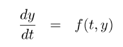
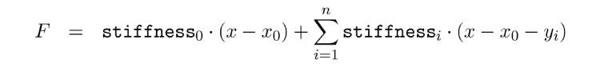
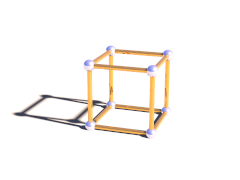
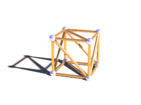
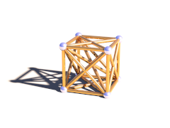

MegaPOV 1.2.1
Copyright © 2002-2005 MegaPOV-Team
24 August 2005
Abstract
This documentation contains a complete set of information about MegaPOV. Here you can find descriptions from either script and patch writer point of view. This work is supposed to be an addition to complete the POV-Ray™ Documentation.
Table of Contents
- 1. Introduction
- 2. MegaPOV References
- 3. MegaPOV Include files
- 4. Tutorials
- 5. Internals
- 6. Appendices
- Index
List of Figures
List of Tables
- 2.1. The following time formatting strings are available:
- 2.2. HDR image ambient variations
- 2.3. Exposure influence comparison
- 2.4. internal sequence
- 2.5. halton sequence
- 3.1. MechSim_Show_Grid() variations
- 3.2. MechSim_Show_Patch() variations
- 3.3. MechSim_Show_Patch() variations
- 4.1. Example for high dynamic range of raytraced scene
- 4.2. Views and illumination maps from the scene
- 4.3. The illumination maps being used in a scene
- 6.1. Current MegaPOV-Team Members
List of Examples
- 2.1. Influence of Frame_Step on generated files
- 2.2. Using the #set directive
- 2.3. date function usage
- 2.4. Using the timer function
- 2.5. Averaging frames with output_filename function
- 2.6. Polynomial solver usage
- 2.7. Conversion from the sor object definition to the sor_spline type in spline
- 2.8. Alternative forms of user_defined camera type definition
- 2.9. HDR image example
- 2.10. Bicubic interpolation for an image map
- 2.11. Various values for film exposure simulations
- 2.12. Exponential tone mapping
- 2.13. Adaptive time stepping
- 2.14. An example for a complete collision{} section:
- 2.15. Mass interaction
- 2.16. Constant downward force in Mechanics simulation
- 2.17. Attachment in Mechanics simulation
- 2.18. The simulation data file format
- 2.19. The internal post process function asking for red color at the middle of image
- 2.20. Post processing which does nothing (only duplicate the original image)
- 2.21. Post processing which turns the rendered image into a gray scale image
- 3.1. MechSim_Show_Objects() macro usage
- 3.2. MechSim_Show_All_Objects() macro usage
- 3.3. MechSim_Show_Grid() macro usage
- 3.4. MechSim_Show_Patch() macro usage
- 3.5. MechSim_Show_Sphere() macro usage
- 3.6. VE_Elements array generation
- 3.7. MechSim_Generate_Grid_Fn() macro usage
- 3.8. MechSim_Generate_Grid() macro usage
- 3.9. MechSim_Generate_Grid_Std() macro usage
- 3.10. MechSim_Generate_Box() macro usage
- 3.11. MechSim_Generate_Block() macro usage
- 3.12. MechSim_Generate_Patch() macro usage
- 3.13. MechSim_Generate_Patch_Std() macro usage
- 3.14. MechSim_Generate_Line() macro usage
- 3.15. MechSim_Generate_Line() macro usage
- 3.16. MechSim_Generate_Sphere() macro usage
- 3.17. Find edge macro
- 5.1. Typical patch markup
Table of Contents
MegaPOV is a custom and unofficial patched version of POV-Ray™. It is a compilation of separately released patches and techniques released within the POV-Ray™ Community and dedicated work of the MegaPOV-Team.
Many patches from MegaPOV 0.7 were included in official POV-Ray™ 3.5. It will probably not be the case with patches included in MegaPOV 1.0 and later in such a large scale because current official POV-Ray™ development involves larger changes that make it less straight away to integrate MegaPOV patches.
MegaPOV 1.2.1 is a bugfix release and contain the following changes:
- Several Mechsim bugfixes
- Improved compatibility of the PPM/PGM reader with the standard
- Resolution of problems of the Windows version
MegaPOV 1.2 includes the following new features and changes:
- Control up to which trace level area lights are calculated (see Section 2.4.5.1, “Area Light max_trace_level”)
- Bicubic interpolation for images (see Section 2.6.7, “Bicubic interpolation for images”)
- Custom tone mapping feature that offers detailed control of how the colors are mapped to the resulting image and how this interacts with antialiasing (see Section 2.7.2, “Custom tone mapping function”)
- Radiosity improvements:
- new adaptive pretrace mode (see Section 2.7.3.6, “Adaptive radiosity pretrace”)
- adaptive search radius/error_bound (see Section 2.7.3.4, “Adaptive radiosity error_bound”)
- more detailed radiosity statistics (see Section 2.7.3.5, “Additional radiosity statistics”)
- sampling visualizations (see Section 2.7.3.7, “Radiosity visualizations”)
- bug fixes for randomized radiosity sampling directions (see Section 2.7.3.3, “Randomized radiosity sampling directions”)
- Mechsim changes (see Section 2.7.4, “Mechanics simulation patch”):
- improved collision bounding/hashing system
- viscoelastic connections
- global fixation in 1 or 2 dimensions
- attachments can be limited to 1 or two dimensions (free movement in the others)
- adaptive time stepping for 4th order Runge-Kutta method
- new simulation data file format
- custom forces that can be applied to individual masses
- more detailed simulation statistics
- access to simulation forces from SDL
- various bug fixes and improvements
- Bug fix for problem with alpha channel output and bright colors
- Bug fix crand in textures resulting in negative color values
For an overview of the previous versions, (see Section 6.3, “MegaPOV before POV-Ray 3.6”)
In case you are new to POV-Ray™ and maybe have not even used the official POV-Ray™ before it is not recommended to use MegaPOV. Instead get the official POV-Ray™ from the POV-Ray™ website.
MegaPOV will be interesting for more advanced POV-Ray™ users who are particularly interested in the additional functionality the patches offer. We try to ensure a relatively high quality of the patches added to MegaPOV but still some of these patches are still under development so you have to expect that not everything will run as smoothly as on official POV-Ray™ and that features will possibly change in future versions.
Some people may wonder why a MegaPOV version is still maintained when most MegaPOV features have been incorporated and improved in POV-Ray™ 3.5. Here are some reasons why:
- There are already several patched versions of POV-Ray™ 3.5;
- Many patched versions are only available for a specific platform;
- You often need to switch between patched versions for different features;
- The next update of POV-Ray™ will probably take some time;
- MegaPOV is a public test version. Features which prove to be popular and more or less bug free might get the attention of the POV-Team™ and make it into the next POV-Ray™.
So the MegaPOV-Team collects available patches, tries to merge them into one patch collection and makes it available for the most common platforms.
MegaPOV features are enabled by using:
#version unofficial megapov 1.2; // version number may be different
The new features are disabled by default, and only the official version's syntax will be accepted. The above line of POV code must be included in every include file with MegaPOV features as well, not just the main POV file. Once the unofficial features have been enabled, they can be again disabled by using:
#version 3.6;
This is useful to allow backwards compatibility for some features.
Packages with compiled binaries are available for the most common platforms. They can be obtained at the MegaPOV site where you can also find the source code.
The Mac version with its special user interface is maintained separately on Smellenbergh's site.
An online version of the MegaPOV documentation as well as downloadable archives in various formats are located at the MegaPOV site - documentation section.
A preview of the samples coming with MegaPOV can be found in our demo section. The thumbnails there have a link to a larger image (640*480) and an mpeg file in case of animations and some description is available there as well.
| Note | |
|---|---|
None of the MegaPOV packages includes the official POV-Ray™ documentation, samples and include files although these are essential for using MegaPOV. If you do not already have installed POV-Ray™ you should get the official version from the POV-Ray™ website. | |
We don't maintain our own forum for discussions. MegaPOV is an unofficial patch to POV-Ray™ and the MegaPOV-Team is just part of the POV-Ray™ Community. That's why you can use the povray.unofficial.patches group for discussions related to MegaPOV. You can also use povray.binaries.* and povray.text.* groups to upload files related to MegaPOV. All mentioned groups are located on news.povray.org.
Table of Contents
The Frame_Step=n (+STPn) option introduces breaks in the order of rendered steps. It splits the order of rendered frames into a 'virtual' and a 'real' order.
'Virtual' order is the same as the traditional (used in POV-Ray™ 3.5) order described with Initial_Frame, Final_Frame, Initial_Clock, Final_Clock, Subset_Start_Frame, Subset_End_Frame. This order is what the scripts reads from initial_frame, clock_delta and other animation related build-in tokens in SDL.
'Real' order is a subset of 'virtual' order. It is every n-th frame where n is the value of Frame_Step. Selected frames are reordered (with ascending or descending order) according to the sign of Frame_Step option.
Frame_Step is supposed to use parallel rendering over one source with one location shared between instances of renderer.
Example 2.1. Influence of Frame_Step on generated files
The following command line:
megapov +Iscene.pov Initial_Frame=1 Final_Frame=5 +FN
causes the creation of files in such order:
scene1.png scene2.png scene3.png scene4.png scene5.png
while when using Frame_Step:
megapov +Iscene.pov Initial_Frame=1 Final_Frame=5 +FN Frame_Step=-2
causes a subset of it in the following order:
scene5.png scene3.png scene1.png
| Important | |
|---|---|
Frame_Step different than 1 works fine for those animations where variables are not passed between frames when using external files and where the next frame does not use values derived from a previous (in the meaning of virtual order) frame by other ways. | |
Apart from reading HDR images as image maps (see Section 2.6.6, “HDR (High Dynamic Range) image type”) MegaPOV also supports this file format for image output. Further information on this file format can be found in Section 2.6.6, “HDR (High Dynamic Range) image type” as well.
The file format identification character is H. Writing this file format is activated by the command line option
+FH
or the ini option
Output_File_Type=H
The #set keyword modifies the most recently created version of a variable. So, if a variable has been created previously with either #declare or #local, its value can be changed with the #set directive.
Example 2.2. Using the #set directive
#declare MyCounter = 0: #set MyCounter = MyCounter + 1;
One advantage is that it makes it more visually clear where variables are 'created', and where they are only 'changed'.
Another advantage is that if you try to change a variable that doesn't yet exist, it produces an error. This could happen if you make a typing mistake, like this:
#declare MyCounter = 0; #while (MyCounter < 10) #declare MyCountr = MyCounter+1; #end
This would normally cause an infinite loop, and may take a while to track down, especially in complex scenes and with typos that "look right" at a glance. If #set was used, it would cause an error ("#set cannot assign to uninitialized identifier MyCountr.") at that line, pointing you directly at the problem.
POV-Ray™ 3.5 in its official release does not accept all built-in constants and variables to be used in functions. Following tokens are recognized additionally in VM since MegaPOV 1.0: clock_delta, clock_on, false, final_clock, final_frame, frame_number, initial_clock, initial_frame, image_height, image_width, no, off, on, true, version, yes . All mentioned tokens return the same values as in the whole SDL parser.
As other animation options, also Frame_Step has its own equivalent in SDL. You can use the frame_step key-word to get the value which was passed to Frame_Step (see Section 2.1.1, “Frame_Step”). Default value is 1.
With the keyword date, time and/or a date can be used in your images. This might be useful in a macro to place a time stamp in your images, along with your name. The keyword date works like other string functions, except that you have to supply a format string.
Example 2.3. date function usage
Suppose it's Saturday 1 January. The following script:
#declare TheString=date("%a %B")will return the string: Sat January
The most flexible implementation was chosen (which is probably not the easiest ...) because not all countries write dates in the same way. Just think of the difference between the USA and most parts of Europe. These are the possible specifiers for the format string: Please note that these should be equal for all platforms but if you don't get the expected result, contact the person who compiled your version to find out if there are differences.
Table 2.1. The following time formatting strings are available:
| a | Abbreviated weekday name. |
| A | Full weekday name. |
| b | Abbreviated month name. |
| B | Full month name. |
| c | The strftime() format equaling the format string of "%x %X". |
| d | Day of the month as a decimal number. |
| H | The hour (24-hour clock) as a decimal number from 00 to 23. |
| I | The hour (12-hour clock) as a decimal number from 01 to 12 |
| j | The day of the year as a decimal number from 001 to 366 |
| m | The month as a decimal number from 01 to 12. |
| M | The minute as a decimal number from 00 to 59. |
| p | "AM" or "PM". |
| S | The seconds as a decimal number from 00 to 59. |
| U | The week number of the year as a decimal number from 00 to 52. Sunday is considered the first day of the week. |
| w | The weekday as a decimal number from 0 to 6. Sunday is (0) zero. |
| W | The week of the year as a decimal number from 00 to 51. Monday is the first day of the week. |
| x | The date representation of the current locale. |
| X | The time representation of the current locale. |
| y | The last two digits of the year as a decimal number. |
| Y | The century as a decimal number. |
| z | The time zone name or nothing if it is unknown. |
| % | The percent sign is displayed. |
| Note: | |
|---|---|
To use the '%' character in the result, use it twice: date("%%") | |
Refer to date.pov for an example scene. Please note that you might have to write the result in a file if you want to abort the rendering and continue later on. Otherwise you could get a different result because time goes on :-)
The keyword start_chrono sets an internal variable and returns the current internal clock counter of your computer. The return value is not important. However, you must assign this return value from start_chrono otherwise you get an error. Use it like this:
#declare Stopwatch = start_chrono;
or use it like this:
#if (start_chrono)
but not:
start_chrono //parsing stops with a fatal error
The keyword current_chrono returns the time in full seconds (no fractions of seconds) between start_chrono and current_chrono. The start value is not changed. A second current_chrono will still return the seconds between start_chrono and the second current_chrono.
If you don't call start_chrono somewhere before you call current_chrono, you will get the seconds elapsed since the beginning of the current render (parsing).
Example 2.4. Using the timer function
//reset the chrono and return the internal clock counter
#declare ParseStart = start_chrono;
... syntax to be parsed
//read the seconds elapsed since chrono_start
#declare ParseEnd = current_chrono;
#debug concat("\nParsing took ",str((ParseEnd, 1, 0)," seconds\n")
Refer to chrono.pov for a demo scene.
Some animators want to use filenames of previous, already rendered frames to average them to mimic motion_blur in one turn. But the concatenation of filename with frame number is not a trivial thing and can be platform dependant. MegaPOV allows you to get n-th filename of current animation. For stills it always returns filename without numbers.
#declare File_Name=output_filename(Frame_Number)
Example 2.5. Averaging frames with output_filename function
You can force every 10th frame to be averaged content of previous nine frames, this way:
#if(mod(frame_number,10)=9)
#declare Averaged_Frames=pigment{
average
#local Counter=1;
#while(Counter<10)
[1 image_map{output_filename(frame_number-Counter)}]
#set Counter=Counter+1;
#end
}
// placing of pigment in output area
#else
// conventional scene
#endYou probably already know that the image_width and image_height keywords return the sizes of a rendered image. But there are cases when you would like to change the content of a scene depending on the sizes of the images used for maps. For this purpose the image_width and image_height keywords are extended with an optional parameter which is the identifier of an item using an image.
#declare Identifier=image_width [ (ITEM_WITH_IMAGE) ]; #declare Identifier=image_height [ (ITEM_WITH_IMAGE) ]; ITEM_WITH_IMAGE: PIGMENT_ID | NORMAL_ID | TEXTURE_ID
The usage of the dimension_size is extended since MegaPOV 1.1 with a measurement of floats, vectors and colors. If you want to write a universal script which works differently depending on the number of components in an identifier, you can use the dimension_size to get 1,2,3,4 or 5 as number of the components in the given identifier.
#declare Identifier=dimension_size ( FLOAT | VECTOR | COLOR );
MegaPOV 1.1 allows the verification of the type (and in some cases subtypes) of identifiers. It is possible thanks to the is function which tests the internal type of an identifier.
#declare Identifier=is ( IDENTIFIER , TYPE | SUBTYPE );
TYPE: array | camera | color |
color_map | density | density_map |
finish | float | fog |
function | interior | light_source |
material | media | normal |
normal_map | object | pigment |
pigment_map | rainbow | sky_sphere |
slope_map | spline | string |
texture | texture_map | transform |
vector
SUBTYPE: SPLINE_TYPE | OBJECT_TYPE | CAMERA_TYPE
SPLINE_TYPE: akima_spline | basic_x_spline |
cubic_spline | extended_x_spline |
general_x_spline | linear_spline |
natural_spline | quadratic_spline |
sor_spline | tcb_spline
OBJECT_TYPE: bicubic_patch | blob | box |
cone | cubic | cylinder |
disc | height_field | intersection |
isosurface | julia_fractal | lathe |
merge | mesh | parametric |
plane | poly | polygon |
prism | quadric | quartic |
smooth_triangle | sor | sphere |
sphere_sweep | superellipsoid | text |
torus | triangle | union
CAMERA_TYPE: cylinder | fisheye | omnimax |
orthographic | panoramic | perspective |
spherical | ultra_wide_angle | user_defined
An example using the is keyword can be found in the mp_types.inc include file (see Section 3.3, “The 'mp_types.inc' include file”).
MegaPOV delivers new pre-defined functions. These new internal functions can be accessed through the mp_functions.inc include file, so it should be included in your scene to make use of them.
f_triangle function has 10 parameters:
FLOAT f_triangle(FLOAT V1x, FLOAT V1y, FLOAT V1z, FLOAT V2x, FLOAT V2y, FLOAT V2z, FLOAT V3x, FLOAT V3y, FLOAT V3z, FLOAT Thickness);
The parameters V1x, V1y, V1z describe the coordinates of the first vertex in the triangle.
The parameters V2x, V2y, V2z describe the coordinates of the second vertex in the triangle.
The parameters V3x, V3y, V3z describe the coordinates of the third vertex in the triangle.
The parameter Thickness describes how thick the triangle is.
| Note | |
|---|---|
In order to achieve the fastest calculation, try to pass the parameters so that the side V1-V2 represents the longest side and V1-V3 represents the shortest side. | |
The polynomial solver is accessible from scripts via the float functions n_roots and nth_root with the following syntax:
INT n_roots(FLOAT an, ..., FLOAT a0, BOOL sturm_flag, FLOAT epsilon);
FLOAT nth_root(FLOAT nth, FLOAT an, ..., FLOAT a0, BOOL sturm_flag, FLOAT epsilon);
n_roots returns the number of roots derived from the polynomial given by the parameters an, ..., a0 and calculated under the conditions specified by the parameters sturm_flag and epsilon.
nth_root returns the value of the nth root of a given polynomial.
The sturm flag turns on a different algorithm of calculation. Its usage influences the number of returned roots. Epsilon (positive) value means that the roots below Epsilon value are ignored. Epsilon=0 means that none of the roots are ignored.
| Important | |
|---|---|
You don't have to call n_roots before nth_root, but if you do call nth_root with the wrong root number then it causes an error and breaks parsing. It is better to call n_roots first to verify the number of available roots. | |
Example 2.6. Polynomial solver usage
Imagine that we have x3+6*x2-x-6 and that we are interested in its roots for further calculations. So if we declare:
#declare N=n_roots(1, 6, -1, -6, off, 0);
then N has value 3 because the mentioned equation has 3 roots. If we are interested in what roots it has, we can use the following calls:
#declare R0=nth_root(0, 1, 6, -1, -6, off, 0); #declare R1=nth_root(1, 1, 6, -1, -6, off, 0); #declare R2=nth_root(2, 1, 6, -1, -6, off, 0);
And it returns R0=-6, R1=1 and R2=-1. So finally we know that x3+6*x2-x-6=(x+6)*(x-1)*(x+1) .
Splines in POV-Ray™ can be used to create objects through rotation, translation or by being a border of a surface. Usually it is hard to match those surfaces with calculations developed in SDL because they are mostly hard-coded within the source core code of POV-Ray™. The spline feature introduced in POV-Ray™ 3.5 makes such operations much easier but some spline types are still missing. sor_spline is introduced to access the surface of the sor object in SDL.
To use the data from the sor object in a sor_spline, the order of coordinates has to be changed. The old y coordinate is now the clock value in the spline. The advantage is that one sor_spline can hold data from five old sor-s. That's because every spline can operate up to five dimensions along the clock value.
Example 2.7. Conversion from the sor object definition to the sor_spline type in spline
spline{
sor_spline
-1.000000,0.000000*x
0.000000,0.118143*x
0.540084,0.620253*x
0.827004,0.210970*x
0.962025,0.194093*x
1.000000,0.286920*x
1.033755,0.468354*x
}
sor{
7
<0.000000, -1.000000>
<0.118143, 0.000000>
<0.620253, 0.540084>
<0.210970, 0.827004>
<0.194093, 0.962025>
<0.286920, 1.000000>
<0.468354, 1.033755>
}An akima_spline is a spline that goes smoothly (pleasingly for some) through all points. ACM Press abstracts original work of Hiroshi Akima:
This method is devised in such a way that the resultant curve will pass through the given points and will appear smooth and natural. It is based on a piecewise function composed of a set of polynomials, each of degree three, at most, and applicable to successive intervals of the given points. In this method, the slope of the curve is determined at each given point locally, and each polynomial representing a portion of the curve between a pair of given points is determined by the coordinates of and the slopes at the points. Comparison indicates that the curve obtained by this new method is closer to a manually drawn curve than those drawn by other mathematical methods. | ||
| --The Guide to Computing Literature. | ||
Syntax is:
spline {
akima_spline
time_Val_1, <Vector_1> [,]
time_Val_2, <Vector_2> [,]
...
time_Val_n, <Vector_n>
}
This spline is also known as Kochanek-Bartels spline.
Syntax is:
spline {
tcb_spline [TCB_PARAMETERS]
time_Val_1 [TCB_PARAMETERS], <Vector_1> [TCB_PARAMETERS][,]
time_Val_2 [TCB_PARAMETERS], <Vector_2> [TCB_PARAMETERS][,]
...
time_Val_n [TCB_PARAMETERS], <Vector_n> [TCB_PARAMETERS]
}
TCB_PARAMETERS:
[tension FLOAT] [continuity FLOAT] [bias FLOAT]The tension, continuity and bias are fully optional. Depending on the place where they appear, they control the spline in different ways:
- Placed right after the tcb_spline keyword, they set the default values for all ends of the spline segments. This placement is ignored in case of copying spline without adding new controls because previous defaults were already propagated to each side of control points.
- Placed between the time_value and the corresponding vector, the tcb parameters determine the properties of the spline segment ending in the vector that follows these parameters.
- For tcb parameters following a vector, the properties of the spline segment beginning after this vector are set.
What is controlled by these parameters?
- tension controls how sharply the curve bends.
- continuity controls how rapid speed and direction change.
- bias controls the direction of the curve as it passes through the control point.
| Note | |
|---|---|
| A tcb_spline needs additional control points before and after the spline. This is required to control the first and last segment of the spline. | |
A very nice property of x splines is that they can go through a control point as well as just approximate it.
Syntax is:
spline {
basic_x_spline [freedom_degree FLOAT]
time_Val_1, <Vector_1> [,]
time_Val_2, <Vector_2> [,]
...
time_Val_n, <Vector_n>
}
| Note | |
|---|---|
| A basic_x_spline needs additional control points before and after the spline. This is required to control the first and last segment of the spline. | |
The extended_x_spline offers the possibility to mix smooth curves and sharp edges in an unrestricted way in one spline.
Syntax is:
spline {
extended_x_spline [freedom_degree FLOAT]
time_Val_1, <Vector_1> [freedom_degree FLOAT ][,]
time_Val_2, <Vector_2> [freedom_degree FLOAT ][,]
...
time_Val_n, <Vector_n> [freedom_degree FLOAT ]
}Since MegaPOV 1.0 it is possible to read values stored in a spline with a notation similar to an array. Previously once the spline was declared, it was only possible to evaluate it for a specified argument. Now two new usages are possible: you can get the number of entries and read the exact values placed in splines.
SPLINE_USAGE: SPLINE_EVALUATION | SPLINE_MEASUREMENT | SPLINE_ENTRY SPLINE_EVALUATION: #declare Spline_Value = MySpline(Val); #declare Spline_Value = MySpline(Val, SPLINE_TYPE); SPLINE_MEASUREMENT: #declare Number_Of_Entries = dimension_size( MySpline ); SPLINE_ENTRY: #declare Float_Time_Parameter = MySpline[ Counter ][ 0 ]; #declare Vector_Value_Of_Entry = MySpline[ Counter ][ 1 ];
This patch adds a new option to the transform syntax that modifies the transform to be suited for transforming normal vectors.
When a mesh is transformed by the transformation matrix M the normals need to be transformed with the transpose of the inverse of M. This is handled automatically by this patch.
Syntax is:
transform {
...
normal on|off
}
The default value is off so you get a standard transform.
Instead of patching POV-Ray™ with new camera types MegaPOV provides a tool to define any projection type directly inside the scene scripts. This tool is named user_defined camera type. It allows starting camera rays from any point in any direction. Both the location and direction of rays is specified as a set of three functions or as one pigment.
camera {
user_defined
location { FUNCTION_VECTOR }
direction { FUNCTION_VECTOR }
}
FUNCTION_VECTOR:
PIGMENT | 3_USER_DEFINED_FUNCTIONS ...
3_USER_DEFINED_FUNCTIONS:
USER_DEFINED_FUNCTION
USER_DEFINED_FUNCTION
USER_DEFINED_FUNCTION
In the case of 3 functions used to define location or direction, please remember that those functions operate on screen coordinates (u and v) in the area <0,0>-<1,1> so that they are independent of the image resolution. If you want to convert the value from the range 0-1 to the range 0-image_width or 0-image_height you can use the function adj_range from the math.inc include file.
In the case of a pigment used to define location or direction, please remember that the values of the pigment are taken from the area <0,0,0>-<1,1,0>.
Example 2.8. Alternative forms of user_defined camera type definition
Let's imagine we want to recreate the orthographic camera using a user_defined camera:
camera{
orthographic
location <.5,.5,0>
direction z
up y
right x
}
Written as a set of functions it would be:
camera{
user_defined
location{
function{u}
function{v}
function{0}
}
direction{
function{0}
function{0}
function{1}
}
}
Defined with pigments it would be:
camera{
user_defined
location{
pigment{
gradient x
pigment_map{
[0 gradient y color_map{[0 rgb 0][1 rgb x]}]
[1 gradient y color_map{[0 rgb y][1 rgb x+y]}]
}
}
}
direction{
pigment{rgb z}
}
}
Of course if it can make the script shorter, you can mix notations. You can use both functions and pigments in one camera definition:
camera{
user_defined
location{
function{u}
function{v}
function{0}
}
direction{
pigment{rgb z}
}
}
With MegaPOV, in every test using Inside of objects the bounding object has now priority. It first tests if the point is inside the bounding. If it is not then it knows that it can already decide that the point is outside (if the object is not inversed) or that the point is inside (if the object is inversed).
This should increase rendering speed of complicated CSG objects, since it could eliminate a lot of computing steps. The inside test is firstly done for the bounding object. Only when this test is inside the bounding, the tests against each of the objects composing the CSG object will be done.
Based on the text enhancement idea of Jamis Buck and Noel Bundy, but modified and extended.
Syntax is:
text {
the usual text stuff
...
[ h_align_left | h_align_center | h_align_right ]
[ v_align_top | v_align_center | v_align_bottom ]
}
h_align_left By adding this keyword to the text block, the text string (including horizontal offset) is aligned horizontally so that its most left point touches the y-axis. This is identical to the default alignment.
h_align_center By adding this keyword to the text block, the text string (including horizontal offset) is aligned horizontally so that it extends equally on both sides of the y-axis.
h_align_right By adding this keyword to the text block, the text string (including horizontal offset) is aligned horizontally so that its most right point touches the y-axis.
v_align_top By adding this keyword to the text block, the text string (including vertical offset) is aligned vertically so that its highest point touches the x-axis.
v_align_center By adding this keyword to the text block, the text string (including vertical offset) is aligned vertically so that its middle height sits on the x-axis.
v_align_bottom By adding this keyword to the text block, the text string (including vertical offset) is aligned vertically so that its lowest point sits on the x-axis.
| Note | |
|---|---|
When no alignment is specified, the POV-Ray™ defaults are used. Horizontally to the left and vertically on the base line. The old keyword "position" of previous MegaPOV versions is no longer supported. | |
simcloth allows to simulate cloth in MegaPOV. The cloth patch is rectangular, and interacts with its environment (gravity, some obstructing objects, wind, ...).
Syntax is:
simcloth {
[ environment OBJECT-IDENTIFIER ]
[ friction FLOAT ]
[ gravity VECTOR ]
[ wind { PIGMENT } ]
[ viscosity FLOAT ]
[ neighbors 0 | 1 ]
[ internal_collision on | off ]
[ damping FLOAT ]
[ intervals FLOAT ]
[ iterations INTEGER ]
input STRING
[ output STRING ]
[ mesh_output STRING ]
[ smooth_mesh on | off ]
[ uv_mesh on | off ]
}
environment is followed by an object identifier. The object should be declared before simcloth {}. This object defines the environment that will interact with the cloth. Although any object can be used, it is recommended to use objects which have well-defined interiors.
friction is a coefficient specifying energy loss when the cloth touches the environment. A low value (<= 0) means a lot of friction and strongly slows the movement of the cloth. A high value (>= 1) will allow the cloth to slide over the objects (but not to bounce off ...). Default value is 1.0
gravity Specifies the direction and the strength of gravity. The default value is <0, 0, 0>.
wind A pigment is used to define the direction and strength of the wind in every space location. At a given point, the wind is defined by the red, green and blue components of the pigment at this point. You can explicitly declare the pigment, or use an already declared identifier. Don't forget that the color components can take any value you want (negative ones, greater than one, ...)
viscosity Specifies the influence of the wind and air friction on the cloth. The default value is 0 (no influence).
neighbors Specifies the number of neighbors that are joined by springs at each point. neighbors 0 is for 8 neighbors (faster but rougher calculation), and neighbors 1 (default value) is for 24 neighbors (slower calculation, but better results).
internal_collision Activates or deactivates internal collision management (cloth against itself). This problem is handled by added springs between points that are too close together. System instability probability is increased, and you must, most often, decrease the intervals parameter (see below). Deactivated by default (warning: much longer parsing when activated).
damping General energy loss parameter, it limits the accumulation of the model approximations and errors. A value lower than 0.95 (default value) is strongly recommended.
intervals specifies the time interval between each iteration. Keep it low. Default value is 0.05.
iterations It's the number of iterations to calculate.
input Filename of the starting *.cth file. The only required parameter, since you need a cloth to start with. For a complete description of the *.cth file format, see below.
output Filename of the ending *.cth file. If this parameter is specified, the result of the simulation is saved. Useful for animations, or for a multi-stage calculation.
mesh_output Allow the program to output a file (with specified name), containing tons of triangles, corresponding to the cloth points after the simulation. It allows you to save the result of a simulation, in a format usable by other POV-Ray™ versions (official or unofficial).
smooth_mesh Activate or deactivate the creation of smooth_triangle's if the mesh_output option is activated. Deactivated by default.
uv_mesh Activates or deactivates uv coordinates within the triangle (or smooth_triangle) if the mesh_output option is activated. UV coordinates go from <0, 0> to <1, 1>. Deactivated by default.
The file format is simple: the first line describes the cloth dimensions (number of points n1 and n2, normalized length between 2 neighbors nlng), and the springs strength ks. The other lines describe the location in space and velocity of each point. All values (3 for location, 3 for speed) are separated by commas, and each line is terminated by a comma as well.
Then, there are the constraints definitions. Constraints are 3 coefficients (1 for each axis) that will control the velocity vector of a given point of the cloth. It will be possible, for instance, to slow down a corner of the cloth along one axis, to completely stop it along another axis, and let it free along the last one. A constraint is defined by an integer (index), and 3 floating point coefficients, representing the constraint (respectively on x, y, z axis), all this on the same line and separated by commas. The index is the rank of the point (beginning at 0) in order of declaration of the cloth points. Constraints can be declared in any order.
You could see the cloth as 2 arrays of vectors Points[n1][n2], and Velocity[n1][n2], and its constraints Indexn, coefn. The *.cth file will look like this:
n1, n2, nlng, ks, Points[0][0], Velocity[0][0], Points[0][1], Velocity[0][1], ... Points[0][n2-1], Velocity[0][n2-1], Points[1][0], Velocity[1][0], Points[1][1], Velocity[1][1], ... Points[1][n2-1], Velocity[1][n2-1], Points[2][0], Velocity[2][0], ... ... Points[n1-1][n2-1], Velocity[n1-1][n2-1], Index1, coef1[x], coef1[y], coef1[z], Index2, coef2[x], coef2[y], coef2[z], Index3, coef3[x], coef3[y], coef3[z],
For an example of a macro writing such a file (see Section 4.1.1.1.1, “Writing a *.cth file”).
In POV-Ray™ 3.5 the messages concerning the max_gradient follow a heuristic method to be displayed. This means that the message only appears when the difference with the set max_gradient is more than a certain percentage. Also when using a loop with hundreds of isosurfaces which have different max_gradient's, you need to wait after the render for all those messages to be displayed: this can take several minutes. Basically, you cannot control these messages.
In MegaPOV 1.0 you can use the keyword message to control the message flow:
- message on will always show all max_gradient messages
- message off will never show a max_gradient message
- without a message keyword the default heuristic method will be used
This keyword is used in the isosurface{} block and should be used after the function{} block and before any material.
By using conditional expressions, you can now control messages in a loop.
Normally area lights are handled as area lights in all situations. This means that every shadow ray test against an area light source is sampled across the area of the light source. This patch allows to specify a max_trace_level for the area light which turns off the soft shadows above the specified trace level.
light_source {
LOCATION, COLOR
[LIGHT_MODIFIERS...]
max_trace_level INTEGER
}
If you for example specify:
light_source {
<1.0,2.0,2.0>
color rgb 1.0
area_light 0.5*x 0.5*y 9,9 jitter adaptive 1 circular orient
max_trace_level 1
}this will only result in soft shadows on directly visible surfaces. In reflections, refractions and radiosity the light source will be treated as a point light.
This atmospheric glow effect makes a fast-rendering glow effect. It is based on the light source glow effect from POV-AFX, written by Marcos Fajardo, but has been heavily modified.
glow {
type 0 | 1 | 2 | 3
location VECTOR
size FLOAT
radius FLOAT
fade_power FLOAT
color COLOR
TRANSFORMATIONS
}You can specify glows individually, or attached to a light_source. If created in a light source, they will be automatically initialized with the light's position and color (though transforming the light source will not give the expected result).
Choose a glow type from 0, 1, 2 or 3. Type 2 and 3 glows are not completely implemented yet, but 2 will be based on the exp() function and 3 will simulate a sphere with constant density.
The size keyword adjusts the scale of the glow effect. It is not an absolute size, just a scaling amount (because some glows are infinite). It does not quite work properly yet, it causes strange effects with changing distances of objects behind the glow.
The radius keyword specifies a clipping radius confining the glow to a circular area perpendicular to the ray. If the glow is still visible at this radius, it will make a sudden transition.
The fade_power keyword allows you to provide an exponent to adjust the falloff with.
| Note | |
|---|---|
A glow is not an object, it is an atmospheric effect. Therefore glows cannot be used in CSG operations. Transformations on a glow only affect the location vector. So will scale not change the size or shape of a glow, but scale the location coordinates. | |
A motion_blur object is created by averaging many transformed copies of that object. Because only part of the image has to go through some extra calculations, this internal motion blur is usually faster than averaging whole images with an external program.
This patch only does per-object motion blur. The camera cannot be blurred using this method.
Also lights can be blurred using this method: the performance is comparable to the performance of area lights.
To initialize motion blur, add the following to your global_settings block:
global_settings {
motion_blur SAMPLES, SHUTTER-TIME
}SAMPLES is the number of time-frames that will be sampled. More samples will give smoother results, but will take longer to render.
SHUTTER-TIME is the amount of time the shutter is open in POV-clock units. Depending on the specified type, this time interval will be centered around, or added to the clock value for the current frame.
| Note | |
|---|---|
Especially in animations it will give more natural results when this value is kept close to the clock_delta value. You could #declare Shutter_time = clock_delta*Small_factor; | |
To create a Motion Blur object, use the following syntax:
motion_blur {
type 0 | 1
OBJECT | LIGHT-SOURCE
OBJECT-MODIFIERS
}Type 0 will oscillate the motion blur around the current clock value. Half of the SHUTTER-TIME value is subtracted from, the other half added to that clock value. Type 0 is the default.
Type 1 will add the full SHUTTER-TIME value to the current clock value.
Motion blur is triggered by the keyword clock. Any modifier in the motion_blur block that contains the clock keyword will show a blurring effect on that modifier.
Example:
motion_blur {
sphere { 0, 1 material { My_material rotate x*clock}}
translate x*clock
}Here the clock keyword within the material will trigger a rotational blurring of this material and the clock keyword within the motion_blur block will trigger a motion blur in the translation of the sphere.
| Note | |
|---|---|
A motion_blur object contains many copies of the blurred object (one copy for each time sample). For this reason, adding this kind of motion blur can use a lot of memory. Be careful of this. (Remember that multiple copies of mesh objects do not use much memory, though.) | |
| Important | |
|---|---|
The blurring is achieved by parsing the contents of the motion_blur object (everything between the curly braces) many times (once for each time sample). Anything outside of the motion_blur block is only parsed once. This means that only one copy gets created of any item declared outside the blur object. And this static copy is applied to each copy of the motion-blurred object. | |
The fur patch extends media to generate faked three dimensional fur. This is done by "filling" a media container with a new scattering type 6. The light is scattered inside the container approximately like a lot of hairs would scatter them. Furthermore, the density is varied between dense regions ("Here is a hair.") and sparse regions ("Space between the hairs").
scattering { 6, COLOUR
[ structure { OBJECT_TYPE } ]
[ ratio FLOAT ]
[ falloff FLOAT ]
[ frequency FLOAT ]
[ diffuse FLOAT ]
[ reflection FLOAT ]
[ reflection_exponent FLOAT ]
[ force VECTOR ]
[ waves FLOAT ]
[ pigment PIGMENT ]
}
OBJECT_TYPE:
sphere { VECTOR, FLOAT } |
torus { FLOAT, FLOAT } |
box { VECTOR, VECTOR } |
cylinder { VECTOR, VECTOR, FLOAT } |
cone { VECTOR, VECTOR, FLOAT } |
plane { VECTOR, FLOAT } |
smooth_triangle { VECTOR, VECTOR, VECTOR, VECTOR, VECTOR, VECTOR }
In order to simulate fur, we need a structure to which we attach the hairs. The structure provides the positions and directions in which the hairs grow. The possible object types sphere, torus, box, cylinder, cone, plane, and smooth_triangle and their respective parameters are known from POV-Ray™. Remark however, that the provided structure is not necessarily tied to the type of container you use. You are free to fill a (complicated) container with a different (approximating) structure. The default structure is a sphere at the origin with radius 1.
With the next three parameters you can influence the way hairs are grown. The ratio is the ratio between hairs and empty space (default: 0.3). The falloff value describes how fast the density changes from dense (hair) to sparse (space). It you change the default value 0.9, you can create sharper hairs or more fluffy fur. The frequency (default 200.0) determines the scale of the fur (lots of thin hairs vs. fewer thicker hairs).
The next three parameters describe how light is reflected in the media. The diffuse component is similar to the diffuse reflection in usual textures. The default value however is 5.0. The reflection component creates highlights on the hairs. The default reflection is 1.0. The appearance of the reflection can be modified by the reflection_exponent varying from bright spots to soft areas. The default exponent is 1.0.
With the parameter force you can simulate a force pulling the hairs in one direction. Applications include gravity and wind. The vector that you provide determines the direction and the strength of the force.
Curly fur can be created by setting the parameter waves. The larger this parameter is, the bigger the turbulence of the hairs.
Last but not least the fur patch provides a convenient way of setting a pigment of the fur. If you're modelling a tiger or a cow, you can realize the colors by using pigment. The default value is the usual colour of the media. Using a pigment overrides this colour.
The value returned by this pattern is proportional to the angle between a certain ray and the (perturbed) normal at the surface of the object. The range of returned values goes from 0 to 1.
pigment { aoi [ POINT ] }
When no POINT is given, the incident ray of rendering is used. This is not necessarily the ray coming from the camera, it can also be a secondary ray from reflection or refraction effects.
| Note | |
|---|---|
With this option and without reflection and refraction, the range of return values on the visible surfaces goes from 0 to 0.5 since the angle between ray and normal can only be less than 90 degrees | |
When a POINT is specified, the reference ray for measuring the angle will be the ray between this specified point and the intersection point on the object.
| Important | |
|---|---|
This pattern can only be used in situations where the intersection information of the rendering process is available. This applies for usage in pigments, textures and normals but not in media densities or functions. | |
pigment {
listed FLOAT
color_map { color_map stuff } } |
pigment_map { pigment_map stuff } }
}
normal {
listed FLOAT
normal_map { normal_map stuff } }
}This "pattern" is simply a solid pattern, the value of FLOAT is used as the return value of the pattern. This means that the pattern listed at the specified FLOAT value is used as the pattern for the whole object.
This is very useful in having a progression of objects blending from one texture to another, and can also be useful in animating textures.
In this pattern the pattern value is determined by shooting a ray in a certain direction. When this ray hits a specified object it returns 1, if not it returns 0. There are a few options to specify the direction of this ray.
pigment { ... | PROJECTION_PATTERN }
normal { ... | PROJECTION_PATTERN }
PROJECTION_PATTERN:
projection { PROJECTION_OBJECT PROJECTION_TYPE [BLUR_MODIFIER] }
PROJECTION_OBJECT:
OBJECT_IDENTIFIER |
object { ... }
PROJECTION_TYPE:
point VECTOR |
parallel VECTOR |
normal [on|off]
BLUR_MODIFIER:
blur BLUR_AMOUNT, BLUR_SAMPLES
With point VECTOR specified the rays are shot in direction of this point. When a ray hits the specified object, the value 1 is returned, otherwise 0.
When the keyword parallel is used, a ray is shot from each intersection point in the specified direction. When a ray hits the specified object, the value 1 is returned, otherwise 0.
When the keyword normal is used, a ray direction is determined by the normal vector of the surface. This variation can only be used when the intersection information is available, i.e. in pigments, textures and normals. It does not work in media density and functions.
With the blur option, a number of BLUR_SAMPLES rays is sent, more or less modified spread over an area determined by the specified BLUR_AMOUNT value. The pattern value returned is the percentage of rays that intersect with the object.
| Note | |
|---|---|
When no blur is used the pattern returns either 0 and 1. When used in a pigment only the colors for the values 0 and 1 in the color_map are used. With blur on, the pattern can also return other values. | |
warp {
displace {
PATTERN | FUNCTION, COLOR_MAP
type 0 | 1
}
}Displaces the pattern by an amount determined by the PATTERN or FUNCTION and COLOR_MAP at each point.
In type 0, the rgb values of the pigment at each point are used as xyz displacement amounts.
In type 1, the brightness of the pigment color determines the directions and amounts points are pushed.
pigment { noise_pigment { TYPE, MIN_COLOR, MAX_COLOR } }
TYPE:
- 0 - plain color
- 1 - plain monochrome
- 2 - Gaussian color
- 3 - Gaussian monochrome
Produces a "static" effect. This is a pigment, like an image_map, not a pattern. Anti-aliasing tends to mess it up when used in textures, and it is not animation-safe (unless you want an animated static effect). It can be used in an average map to add some noise to a pigment.
This patch introduces support for a new image file format for reading in image_map, image_pattern and other cases. A usual image file stores the color values with 8 bit resolution which means a dynamic range of 255:1. In other words in the dark areas of an image color nuances can only be represented down to 1/255 of the maximum brightness of the image. All darker parts are completely black. High dynamic range images support a wider range of color values than common image files.
The HDR file format supported by MegaPOV is the rgbe format developed by Greg Ward for the RADIANCE software package. It stores the color values in four bytes: three for the red, green and blue color value and one as a common exponent. Further information and image files in this format can be found on:
Syntax for an image map is:
image_map {
hdr "file.hdr"
[map_type 7]
}The new map_type 7 allows correct mapping of the omnidirectional light probes that can be found on Paul Debevec's website and elsewhere.
Example 2.9. HDR image example
Varying the ambient finish shows the high dynamic range of the image
camera {
orthographic
location <.5,.5,-5>
right 1*x
up 1*y
look_at <.5,.5,0>
}
plane {
z,0
pigment {
image_map { hdr "rosette.hdr" once interpolate 2}
}
finish { ambient 1.0 diffuse 0 }
}

HDR images can be most useful for illuminating scenes with a realistic light distribution. Reflections become more realistic and with radiosity you can get a nice appearance of diffuse surfaces as well. A sample scene for this technique can be found in the MegaPOV package. A short tutorial on that matter can be found in Section 4.3.1, “HDRI tutorial”.
POV-Ray™ offers two interpolation methods for images: 2 (bilinear) and 4 (normalized distance). This patch implements a bicubic interpolation as method 3.
In order to obtain the content rendered by some camera as an image_map - without the need for multiple renderings - there is now a new camera_view pigment type introduced in MegaPOV 1.1.
pigment { camera_view{ [CAMERA_ITEMS...] [output OUTPUT_TYPE] } }
OUTPUT_TYPE:
0 | 1 | 2 | 3 | 4 | 5
// 0 - classic color output (default)
// 1 - intersection point components as color components
// 2 - components of normal vector at intersection point
// 3 - components of perturbed normal vector
// 4 - depth (distance between camera location and intersection)
// 5 - components of uv coordinates at intersection
The scene viewed by this camera is rendered directly within the area <0,0>-<1,1>. Additional output keyword allows other rendering data to be presented (see Section 3.2.1, “Output types for camera_view pigment”).
| Important | |
|---|---|
The camera_view pigment is calculated using structures created after parsing which makes it impossible to evaluate it during parsing of scene. When using the camera_view in a recursive way (image in image) the max_trace_level controls the number of times the image is showed. Raise max_trace_level when at a certain recursion level the image gets the background color. | |
This addition simulates decrease of reactive chemicals in film emulsion during exposure. The areas that have received more light react less than other areas. Useful for high contrast scenes as it brings up the dark areas and limit bright areas.
There are two new keywords in the global_settings block:
exposure FLOAT exposure_gain FLOAT
where exposure_gain is optional and has default value 1. Both parameters have to be greater than 0 to influence rendering.
exposure can be thought as film speed, aperture and exposure time multiplied together. The value is not absolute. If the light source intensities in the scene are multiplied by 10 and exposure value is divided by 10 the resulting image will be the same.
exposure_gain can be used to brighten scenes with low maximum intensity when also low exposure value is used.
The equation for such behavior of color used in MegaPOV is:
color = exposure_gain * (1 - exp( - exposure * color )).
Example 2.11. Various values for film exposure simulations
Examples which map range 0-1 to range 0-1 with increasing amount of compression:
exposure 0.05 exposure_gain 20 // almost linear exposure 0.2 exposure_gain 5.5 exposure 0.5 exposure_gain 2.5 exposure 1 exposure_gain 1.6 exposure 10 exposure_gain 1 exposure 100 exposure_gain 1 // high compression
Traditionally the color values POV-Ray™ calculates for the image pixels were clipped right at the beginning, before calculating the antialiasing. Further color processing was not done (except gamma correction). In POV-Ray™ 3.6.1 clipping was moved to be applied after antialiasing which also made it unnecessary to turn it off explicitly for high dynamic range image output. But in a lot of cases this is not the optimal solution for high quality antialiasing.
This patch offers a way to specify a custom tone mapping function for both before and after antialiasing. This way you can for example apply the pre-aa clipping known from POV-Ray™ 3.5 or an exponential exposure curve like in the film exposure simulation patch (see Section 2.7.1, “Film exposure simulation”).
By also allowing to specify a mapping function after antialiasing you can also invert the mapping used and get back the linear color values. The antialiasing in this case is aimed at the used mapping function and when a similar function is applied in an imaging program afterwards the antialiasing will look good. The patch also offers automatic numerical inversion of the mapping function.
The syntax is:
global_settings {
tone_mapping {
function { FUNCTION_ITEMS }
[inverse INTEGER | function { FUNCTION_ITEMS }]
}
}
The functions are user defined float functions with at least one parameter. The original color value is passed as the first parameter and the return value specifies the resulting color. Using
function { min(1, x) }will for example result is a simple clipping.
Specifying an integer value instead of a user defined function after inverse makes MegaPOV numerically invert the function with the number of sample points specified. For non-invertible functions this might lead to unexpected results.
Example 2.12. Exponential tone mapping
The following code applies an exponential exposure curve like the film exposure simulation patch:
#declare Exposure=1.6;
#declare Exposure_Gain=1.0;
global_settings {
...
tone_mapping {
function { Exposure_Gain - exp( -Exposure * x ) * Exposure_Gain }
}
}
The include file tone_mapping.inc coming with MegaPOV offers several macros with useful tone mapping functions (see (see Section 3.6, “The 'tone_mapping.inc' include file”));
In POV-Ray™ 3.5 and earlier temporary files with cache of radiosity were named the same for every frame in the animation rendering. Since MegaPOV 1.0 the name of this file is concatenated from the name of the currently rendered image. Together with Frame_Step (see Section 2.1.1, “Frame_Step”) and this addition it is finally possible to start two parallel processes with radiosity rendering over one source.
The radiosity function in POV-Ray™ 3.5 uses an internal table of directions for the rays that are traced from a sampling point to determine the irradiance at that point. This patch allows to select alternative sets of sample ray directions. This can help both to overcome the limit for maximum count of 1600 as well as improve the quality of results at lower count values.
The syntax description of this feature is:
RADIOSITY_ITEMS:
...
[ samples SAMPLES_ITEMS ]
SAMPLES_ITEMS:
INT_SAMPLES_TYPE |
{
SAMPLES_COUNT,
VECTOR_DIRECTION, ...
[weight INT_WEIGHT_TYPE]
}
MegaPOV contains an internal generator for sample direction using the halton sequence written by . It is activated by adding:
samples 1
to the radiosity{} block. The default value (0) uses the old internal direction table.


The sample ray directions can also be defined directly in the scene file:
samples {
300, // number of directions given
<0.78080, -0.36618, 0.50622>,
<-0.26409, -0.01064, 0.96444>,
...
}A number of sample direction sets is coming with MegaPOV as include files.
The coordinate system for these sample ray directions is relative to the surface at the sample position. The z-Axis points in normal direction. All directions should be in the upper hemisphere (z coordinate >0).
An optional weight parameter allows to weight the sample intensity with cos(theta) where theta is the angle between the normal vector and the ray direction. The sample ray directions should have a density distribution according to this function. If a uniform distribution is used instead weight 1 would weight the sample rays to compensate this. The default is 0 which turns off special weighting.
This patch is based on an idea by . Normally the distribution of radiosity rays is identical for all sample points. This patch rotates the sample set around the vertical axis by a random angle for each sample taken. This can help to reduce artefacts in some cases.
This patch is activated the following way:
radiosity {
...
randomize on
}
| Note | |
|---|---|
Since this feature uses a random number for the sample direction rotation it is not safe to use it in animations. Also a partial render of a scene will produce different results than rendering the whole scene. | |
The POV-Ray™ radiosity feature uses the error_bound parameter to decide when to reuse radiosity samples already in the cache and when to take a new sample because there are not enough samples nearby. Setting a low error_bound makes POV-Ray™ take a new sample very often and therefore leads to more accurate calculation of the diffuse illumination but at the same time is prone to artefacts when used with a low number of sample rays (count).
Especially with geometries containing sharp edges the sample density can become very high because POV-Ray™ recognizes the lighting changes very rapidly there. In such cases it will not be possible to take all required samples during pretrace which is unfortunate because it leads to slow renders, increasing memory requirements during the render and makes splitting the render into multiple tasks more difficult. POV-Ray™ already offers the always_sample option that reduces the necessity of additional samples in the final render pass by setting nearest_count to 1 on the final pass so only one sample is required per radiosity evaluation but this only reduces the problem a bit and is prone to artefacts.
The adaptive error_bound allows you to set a range the error_bound value is automatically chosen from as well as an overestimation factor used to find the optimal error_bound value. This means the radius from which cached radiosity samples are used is increased if not enough samples are found in the area defined by the original error_bound. In a way this is similar to the adaptive search radius used in photon mapping.
This patch is activated by using the following syntax instead of the standard error_bound parameter:
RADIOSITY_ITEMS:
...
[ error_bound ERROR_BOUND_DEFINITION ]
ERROR_BOUND_DEFINITION:
FLOAT_ERROR_BOUND |
{
FLOAT_ERROR_BOUND
[adaptive FLOAT_EB_OVERESTIMATION [, FLOAT_ERROR_BOUND_MAX] ]
}
The default values are:
FLOAT_EB_OVERESTIMATION : 1.5
FLOAT_ERROR_BOUND_MAX : 10.0
The following code for example might be used for an adaptive error_bound:
radiosity {
...
error_bound { 0.3 adaptive 2.0, 20 }
}
Note it can be necessary to use fairly large maximum values to avoid final pass radiosity samples to be necessary. The overestimation factor increases the render time when chosen too small and will result in unnecessarily large errors when very large. Values between 1.5 and 2 are usually a good choice.
The patch introduces some additional statistics showing the number of samples taken in pretrace and final pass and separately for the different recursion levels. This can be useful for optimizing the radiosity settings.
The purpose of the radiosity pretrace is to take care of an optimal distribution of radiosity samples in the scene. For achieving this the view area is sampled with increasing density until pretrace_end. During pretrace pass the error_bound is also reduced with low_error_factor. The results are usually quite good but this is unnecessarily slow in a lot of scenes where different areas require a very different sample density. Also the standard pretrace only samples down to a 2 pixel density which is not sufficient in many cases.
Because of these limitation practical use of radiosity usually does not take all radiosity samples during the pretrace. Sometimes it is even more efficient to totally avoid the pretrace.
This patch introduces a new pretrace mode which no more samples the whole view with the same density but adapts the sampling to the scene's requirements. To accomplish this the pretrace no more traces the different subdivision levels one after the other but subdivides the view in a recursive way.
In addition the new pretrace can also subdivide to a sub-pixel density (by using pretrace_end smaller than 1/image_width). This can of course be quite slow depending on the scene, render- and radiosity-settings.
The new pretrace is activated the following way:
radiosity {
...
adaptive 1
}
The following values can be used for the radiosity parameter:
- 0 old pretrace, default.
- 1 new pretrace, subdivide until no new sample has to be taken.
- 2 new pretrace, one additional subdivision level in addition to 1.
The POV-Ray™ radiosity code contains code to visualize the way radiosity works internally in the rendered images. This code is deactivated by default. This patch offers access to these features from SDL with some new parameters in the radiosity block.
The syntax of these parameters is the following:
RADIOSITY_ITEMS:
...
[ show_samples FLOAT_RADIUS, COLOR ]
[ show_low_count COLOR_LOW_COUNT, COLOR_GATHER_FINAL ]
The show_samples parameter activates the marking of the radiosity sample locations with the specified color. Note this color only sets the ambient value returned by the radiosity function. The other finish components are added to this. Therefore it might be necessary to use quite extreme color values for this. The radius parameter influences how large the sample spots are marked.

The show_low_count activates the marking of areas where the sample density is too low so less than nearest_count samples are available for the radiosity estimation. The color of these areas is chosen with the first parameter. This is only visible when always_sample is off, otherwise additional samples are taken in the final pass and the area is colored with the second color specified.

The mechanics simulation system is integrated into the POV-Ray™ rendering system. The simulation parameters are set in the global_settings{} block of the scene file. While parsing the scene MegaPOV calculates the simulation exactly where it occurs in the file. This way the simulation can interact with the scene by using objects, functions and values set before the mechsim{} block in the scene file. But additionally the simulation data can also be used in the scene later on for placing objects according to the simulation results.
This patch introduces a new block in the global_settings{} section of the POV-Ray™ scene file.
The complete syntax description of this block is:
MECHSIM:
mechsim { [MECHSIM_ITEMS...] }
MECHSIM_ITEM:
method INTEGER | bounding INTEGER |
gravity VECTOR | time_step FLOAT |
step_count INTEGER | time FLOAT |
start_time FLOAT | end_time FLOAT |
accuracy FLOAT[, FLOAT] |
environment { ENVIRONMENT_DEFINITION [ENVIRONMENT_ITEMS...] } |
interaction { INTERACTION_DEFINITION ... } |
field { FIELD_DEFINITION ... } |
force { FORCE_DEFINITION ... } |
attach [VECTOR] { ATTACH_DEFINITION ... } |
fixed VECTOR |
collision { COLLISION_TOGGLE [COLLISION_ITEMS...] } |
topology { [GROUP_DEFINITIONS...] [TOPOLOGY_ITEMS...]
[save_file FILE_NAME [Type]] }
ENVIRONMENT_DEFINITION:
function [(IDENT_LIST)] { FUNCTION_ITEMS } | object OBJECT
ENVIRONMENT_ITEM:
stiffness FLOAT | damping FLOAT | friction FLOAT [, FLOAT] |
method INTEGER
INTERACTION_DEFINITION:
function [(IDENT_LIST)] { FUNCTION_ITEMS }
FIELD_DEFINITION:
function { SPECIAL_COLOR_FUNCTION }
FORCE_DEFINITION:
function { SPECIAL_COLOR_FUNCTION }
ATTACH_DEFINITION:
function { SPLINE }
COLLISION_TOGGLE:
[INT_MASS_MASS [, INT_MASS_FACE [, INT_CONNECTION_CONNECTION]]]
COLLISION_ITEM:
stiffness FLOAT | damping FLOAT | friction FLOAT [, FLOAT]
GROUP_DEFINITION:
group [(INT_GROUP_INDEX)] { TOPOLOGY_ITEMS... }
TOPOLOGY_ITEM:
mass { V_POSITION, V_VELOCITY, F_RADIUS
mass FLOAT | density FLOAT
[attach INTEGER] [force INTEGER] [fixed BOOL] } |
connection { INDEX1, INDEX2 [stiffness FLOAT] [damping FLOAT]
[length FLOAT] } |
viscoelastic { INDEX1, INDEX2 [stiffness FLOAT] [length FLOAT]
[accuracy FLOAT] [ VE_ELEMENTS... ] } |
face { INDEX1, INDEX2, INDEX3 } |
load_file FILE_NAME
VE_ELEMENT:
element { F_STIFFNESS, F_DAMPING [, F_POSITION ] ] }
Some general parameters can be given in the top level of the mechsim{} section.
The default values are:
method : 1
bounding : 0
gravity : <0, 0, 0>
time_step : 0.1
step_count : 10
Selects the integration method used for solving the equations of movement.
Possible values are:
- 1 (MECHSIM_METHOD_EULER) simple forward Euler integration method
- 2 (MECHSIM_METHOD_HEUN) second order (Heun) integration method
- 3 (MECHSIM_METHOD_RUNGE_KUTTA) fourth order Runge Kutta integration method
- 4 (MECHSIM_METHOD_GRADIENT) gradient descent method
Method 1 is a first order integration method also known as explicit Euler method. With the differential equations of movement written as:
|  |
y being the state of the system (positions and velocities) and the initial conditions y(t0)=y0 the Euler method can be written as:
 |
Method 2 is a second order integration method known as Heun's method. Its formula is:
 |
Method 3 is a fourth order integration method known as the classical Runge-Kutta method, in contrast to method 1 and 2 it automatically controls the time steps (see Section 2.7.4.1.1.6, “adaptive time stepping”):
 |
Selects the bounding method to speed up collision detections between masses, connections and faces.
Possible values are:
- 0 (MECHSIM_COLLISION_BOUNDING_NO) no bounding system
- 1 (MECHSIM_COLLISION_BOUNDING_AUTO) automatically select method 0, 2 or 3 depending on complexity
- 2 (MECHSIM_COLLISION_BOUNDING_BOX) speed up using bounding boxes
- 3 (MECHSIM_COLLISION_BOUNDING_HASH) speed up using spatial hashing
The bounding techniques have been implemented by .
Applies an overall constant gravitational force to all masses.
A vector is expected, the unit is m/s².
Standard earth gravity (with y=up coordinates) is:
gravity <0, -9.81, 0>
With field functions (see Section 2.7.4.1.6, “Field forces”) non constant gravity can be simulated
All movements in the simulation system can be fixed in one or two directions using the fixed option.
This can be used to make the MechSim system perform simulation of 2D and 1D systems. Note however that the simulation still runs in 3D internally.
by adding:
fixed <0, 0, 1>
to the mechsim{} block you can for example perform a simulation in the x-y-plane.
All simulation methods use discrete time steps for calculating the simulation. There are three parameters to steer this but only two are needed to correctly define the stepping. The formula for calculating the third is:
Step_Count = Time / Time_Step
An optional start_time value allows to specify a starting time different from 0. Changing this can influence the attach and environment function. (see Section 2.7.4.1.7, “Attaching masses” and Section 2.7.4.1.2, “The environments”) Specifying an end_time value instead of time is also possible.
| Important | |
|---|---|
Using too large time steps can lead to instability in the simulation. MegaPOV will recognize this in most cases and stop simulation with an error message but this does not mean the simulation is correct as long as no error is reported. Simulation results should always be checked for plausibility. | |
Simulation method 3 automatically controls the used time steps. This is done by calculating every step with double steps size and comparing the results. So the local discretization error is automatically kept below a specified threshold. You can specify this threshold and the minimum allowed step size with the accuracy keyword:
accuracy THRESHOLD, MIN_STEP
the minimum step size is optional, default values are:
THRESHOLD : 1.0e-5
MIN_STEP : 1.0e-7
The step size to start with can be specified with time_step. It is usually not critical but can be necessary to be set sufficiently low for a successful simulation.
The render statistics show the actual minimum, average and maximum time steps used during the simulation.
Example 2.13. Adaptive time stepping
A simulation setup for adaptive time stepping could look like:
mechsim {
...
method 3
time 1/30
accuracy 1e-5, 1e-6
...
}
| Note | |
|---|---|
Adaptive time stepping guarantees a certain local accuracy of the simulation, it does not prevent instability though. It will not be possible to simulate a system that does not run with fixed time steps. | |
Environments are shapes the simulated masses are supposed to interact with. Several of them can be created with environment{} blocks.
An environment is defined either by a user defined function or an object. If both are given the function is preferred.
Apart from the default parameters (x, y and z) the function can have a fourth parameter supplying a time index. This way moving environment objects can be simulated.
#declare fn_Env=function(x, y, z, tim) { z-tim }
global_settings {
...
mechsim {
...
environment {
function(x, y, z, tim) { fn_Env(x, y, z, tim) }
...
}
}
}
There are three parameters defining the properties of the environment:
stiffness The elasticity parameter of the surface. The unit is N/m or kg/s².
damping Depending on the environment calculation method (see below) this is either a diminishing factor (<1) applied to the mass velocities at each collision or a damping constant (unit kg/s)
friction The friction factor controls the amount of friction during collisions. An optional second parameter, the friction excess value should usually be slightly larger than 1 and causes the friction to occur already slightly above the surface. This can be helpful to obtain realistic results.
There are currently two methods how the environment collisions can be calculated:
Method 1 (MECHSIM_ENV_METHOD_FORCE) is force based. When a mass collides with the environment a force is applied in direction of the function gradient (with function based environments) or the surface normal (with objects). The stiffness, damping and friction parameters influence this force. friction defines the ratio between the tangential force and the normal force.
Method 2 (MECHSIM_ENV_METHOD_IMPACT) is based on impact laws. The velocity is inverted at the surface and diminished by the damping factor in normal direction and by the friction value in tangential direction. stiffness does not have any influence in this case.
Since this method directly modifies the velocity rather than applying forces it should only be used with the first order (Euler) integration method.

With the gradient descent simulation method the method parameter does not have any effect.
The collisions referred to here are not environment collisions but collisions between the simulation elements. Since detecting this kind of collision is quite computationally intensive it is turned off by default.
With three numbers at the beginning of the collision{} section collision can be toggled for mass-mass-collisions, mass-face-collisions and connection-connection-collisions. All these parameters are optional, the meaning of the possible values is:
- 0 (MECHSIM_COLLISION_NONE) No collisions of this kind are calculated.
- 1 (MECHSIM_COLLISION_ALL) Collisions between all simulation elements are calculated.
- 2 (MECHSIM_COLLISION_GROUP) Only collisions between elements of different groups are calculated.


Internal collisions are always calculated with forces. The same three parameters like in the environment settings can be used to specify the properties
- stiffness The elasticity parameter of the surface. The unit is N/m or kg/s².
- damping A damping constant (unit kg/s)
- friction The friction factor controls the amount of friction during collisions. An optional second parameter, the friction excess value should usually be slightly larger than 1 and causes the friction to occur already slightly before the collision. This can be helpful to obtain realistic results.
Example 2.14. An example for a complete collision{} section:
global_settings {
...
mechsim {
...
collision {
2, /* mass-mass collisions between elements of different groups */
0, /* no mass-face collisions */
0 /* no connection-connection collisions */
stiffness 20000
damping 4000
friction 0.2, 1.01
}
}
}
The topology{} section is the central part of the whole simulation settings. Here the simulation elements, their positions and properties, can be defined.
There are three topology items: masses, connections and faces. Each of them has several parameters that can be set.
The mass block defines a point mass. These are the central elements of the simulation. Their movement is calculated by the simulation system.
The mass block contains the following elements:
- The first item is a vector specifying the position of them mass (unit: m).
- The second item, also a vector, represents the velocity of them mass (unit: m/s).
- The third item is a float standing for the radius of the mass (unit: m). This radius is only used in collision calculations (see Section 2.7.4.1.3, “The collision settings”). Otherwise the mass behaves as a point mass.
In addition either the mass (unit: kg) or the density (unit: kg/m³) of the element has to be given. If density is specified the resulting mass is calculated automatically. An optional boolean parameter (fixed) prevents the mass from moving if set to true.
A complete example for a mass definition:
mass {
<0, 0, 1>, /* position */
<1, 0, 0>, /* velocity */
0.1 /* radius */
density 600
// mass 2
// fixed true
}
The connection block defines a connection between two point masses. It can have elastic and dissipative properties.

The first two elements of this block are integer numbers specifying the indices of the masses to connect.
Connections simulate a parallel elasticity and linear damping element - a so called Voigt-Kelvin-Element.

The force they exhibit on the masses they connect is:
 |
There are three optional parameters: The stiffness value specifies the elasticity of the connection (unit N/m or kg/s²). damping the velocity proportional damping factor (unit kg/s). The default value for both of these is zero. The third parameter allows to specify a relaxed length (x0) of the connection. If it is not specified the distance of the two masses at the time the connection is created is used for this property.
A complete example for a connection definition:
global_settings {
...
mechsim {
...
topology {
mass { ... } /* mass with index 0 */
mass { ... } /* mass with index 1 */
connection {
0, /* index of the first mass */
1 /* index of the second mass */
stiffness 10000
damping 2000
// length 0.5
}
...
}
}
}
The face block defines a triangular face between three point masses. It is used for collision calculations (see Section 2.7.4.1.3, “The collision settings”) and can be useful for generating a mesh from the simulation data for display.
There are three integer numbers in the block, the indices of the masses forming the face.
A complete example for a face definition:
global_settings {
...
mechsim {
...
topology {
mass { ... } /* mass with index 0 */
mass { ... } /* mass with index 1 */
mass { ... } /* mass with index 2 */
face {
0, /* index of the first mass */
1, /* index of the second mass */
2 /* index of the third mass */
}
...
}
}
}
Viscoelastic connections allow you to simulate more complex material properties than conventional connections. Conventional connections simulate a parallel elasticity and linear damping element - a so called Voigt-Kelvin-Element (see Section 2.7.4.1.4.2, “Connections”). With this element the force of the connection only depends on the momentaneous distance and velocity of the masses. Viscoelastic connections use a more complex model that also allows you to simulate effects like relaxation.
The element definition contains the index of the two masses it connects and a relaxed length - just like conventional connections. The stiffness value specifies the static elasticity of the connection (unit N/m or kg/s²). Furthermore you can specify an arbitrary number of parallel Maxwell-Elements. Each contains two mandatory parameters: the stiffness (unit N/m or kg/s²) and the damping (unit kg/s)
The force viscoelastic connections exhibit on the masses they connect is:
|  |
yi are the inner coordinates of the Maxwell-Elements that get calculated by the simulation system.
A complete example for a connection definition:
global_settings {
...
mechsim {
...
topology {
mass { ... } /* mass with index 0 */
mass { ... } /* mass with index 1 */
viscoelastic {
0, /* index of the first mass */
1 /* index of the second mass */
stiffness 10000 /* static stiffness */
element { /* first maxwell element */
2000, /* - stiffness */
5000 /* - damping */
}
element { /* second maxwell element */
4000, /* - stiffness */
2000 /* - damping */
}
// length 0.5
}
...
}
}
}
| Note | |
|---|---|
In contrast to normal connections viscoelastic connections do not participate in collisions. If you want connection-connection collisions in your simulation you have to use normal connections in addition. | |
Simulation elements can be categorized into groups. The main purpose of this is to speed up collision tests. The group keyword can be followed by an integer number in parentheses to explicitly specify the group. Otherwise the group index is determined automatically.
global_settings {
...
mechsim {
...
topology {
mass { ... } /* these elements are group index 0 */
...
group {
mass { ... } /* these elements are group index 1 */
}
group {
mass { ... } /* these elements are group index 2 */
}
group (1) {
mass { ... } /* these elements are group index 1 */
}
...
}
}
}
The topology data can be written to and loaded from files. For the format of these files see Section 2.7.4.3, “The simulation data file format”.
save_file can only be added to the main topology{} block. It saves the complete data after the simulation to the specified file.
load_file can be placed anywhere in the topology{} section. If placed in a group the elements in the file are added to that group. Otherwise they are are placed in groups according to group index information in the file.
The same file name can be specified for both loading and saving the data. This is especially useful for animation when the following frame simulation should start with the result of the last frame:
global_settings {
...
mechsim {
...
topology {
load_file "mechsim_data.dat"
save_file "mechsim_data.dat"
}
}
}
Masses can be set to exert forces on each other depending on the distance and the position in space. Phenomena like gravity in space and electrostatic fields can be simulated this way.
The interaction{} block can contain one or more user defined functions. Apart from the default parameters (x, y and z) the functions can have three additional parameters: the distance between the masses and the masses of the two masses that interact.
The function return value defines the force exerted on both masses in opposite directions. Positive values mean attractive forces and negative values repulsion.
To calculate the force on each mass the function is evaluated at the mass position for all combinations with other masses. The first mass parameter is always for the mass itself, the second is for the other mass interacting. In most cases the two mass parameters should be exchangeable in the formula of course.
General field like forces can be simulated using the field{} block. One example for such a field force is gravity although the simulation system has a special parameter for specifying such a simple constant gravity force. Much more complicated fields can be set up using this function.
The field{} block expects a pigment function defining the force components in the different directions. The red component of the pigment for the x direction, the green component for the y direction and blue for z. The mechsim include file (see Section 3.4, “The 'mechsim.inc' include file”) contains a macro generating an appropriate pigment function from three float functions.
Example 2.16. Constant downward force in Mechanics simulation
A function for a constant downward force (in y direction) would look like:
#include "mechsim.inc"
global_settings {
...
mechsim {
...
field {
Vector_Function(
function {0},
function {-1},
function {0}
)
...
}
}
}
Note that in contrast to the gravity parameter the fields define a force and not an acceleration. Large masses will be influenced less than small masses.
Apart from adding the fixed flag to masses and thereby fixing them to a certain position we can also constrain them to a certain predefined movement. Those movements are described with spline functions in the attach{} block.
An optional vector can be added after the attach keyword to make the attachment only force the movement in one or two coordinate directions. Zero elements in the vector lead to free movement in that direction
Example 2.17. Attachment in Mechanics simulation
The following generates a linear movement in x direction, a constant position in y direction and a free movement in z-direction:
global_settings {
...
mechsim {
...
attach <1,1,0> {
function {
spline {
linear_spline
0.0, <0,0,0>
0.5, <1,0,0>
1.0, <2,0,0>
}
}
}
...
}
}
}
These functions are automatically numbered starting from zero. To attach a mass to a function the attach parameter has to be set in the mass definition. The following mass is attached to the attach function with the number two:
mass {
<0, 0, 1>, <0, 0, 0>, 0.1
density 600
attach 2
}
During the simulation the spline is evaluated at the current time value and the returned vector describes the movement of the attached masses. Note that the spline does not describe an absolute position for the masses, just their movement relative to their starting position. Attaching several masses to the same spline makes them perform a parallel movement.
The whole simulation data can be accessed anywhere in the POV-Script. This is achieved by adding new float/vector functions:
The complete syntax description of this block is:
FLOAT_FUNCTION:
... | mechsim : MECHSIM_ELEMENTS
MECHSIM_ELEMENTS:
time | mass_count | connection_count | face_count |
mass( INTEGER ) : MASS_FLOAT_ELEMENT |
connection( INTEGER ) : CONNECTION_FLOAT_ELEMENT |
viscoelastic( INTEGER ) : VISCOELASTIC_FLOAT_ELEMENT |
face( INTEGER ) : FACE_FLOAT_ELEMENT
MASS_FLOAT_ELEMENT:
radius | mass
CONNECTION_FLOAT_ELEMENT:
index1 | index2 | length | stiffness | damping
VISCOELASTIC_FLOAT_ELEMENT:
index1 | index2 | length | stiffness | accuracy | count |
element( INTEGER ) : stiffness | damping | position
FACE_FLOAT_ELEMENT:
index1 | index2 | index3
VECTOR_FUNCTION:
... | mechsim : MECHSIM_ELEMENTS
MECHSIM_ELEMENTS:
mass( INTEGER ) : MASS_VECTOR_ELEMENT
MASS_VECTOR_ELEMENT:
position | velocity | force
These elements correspond to those set in the mechsim{} block in global_settings{}. The mass position and velocity are the ones that are modified during simulation. The mass force is the summed force that accelerated the mass in the last simulation step. The mass_count connection_count and face_count values are especially useful inside the mechsim{} block to determine the current index:
global_settings {
...
mechsim {
...
topology {
/* part 1 */
mass { ... }
mass { ... }
connection { ... }
...
#declare Start_Mass_Part2=mechsim:mass_count;
#declare Start_Connection_Part2=mechsim:connection_count;
/* part 2 */
mass { ... }
mass { ... }
connection { ... }
...
}
}
}
The Start_Mass_Part2 and Start_Connection_Part2 variables can later be used to display the different parts of the simulation in different forms.
The time value returns the current time index of the simulation (in seconds). Inside the mechsim block this is the start time of the simulation, afterwards it returns the time index when the simulation ended.
The force values return the force a connection exerts on the masses it connects. This value is a scalar, the force is always in direction of the connection. Note this value can of course be calculated manually as well, it is supplied for convenience.
The file format used for storing the simulation data has changed in MegaPOV 1.2. Backwards compatibility is provided for reading MegaPOV 1.1 style simulation data files. The new file format is especially introduced for being forward compatible with future versions of MegaPOV. This means that data files written by newer versions of MegaPOV should still be possible to read with MegaPOV 1.2 - it will just ignore the data it cannot handle.
The file format - like the old one - is a ASCII text file format. It starts with a four character string ('MSIM') identifying the mechanics simulation file format. The second element (seperated by a comma) is an integer number specifying the subformat of the file. Subformat 4 is the current new format. Subformat 3 and lower are read with the backwards compatibility feature.
After that follows a line break and the first character of every line following indicates what kind of data is stored in that line. The following characters are recognized right now:
I: Info line - containing 4 number: the number of masses, connections, faces and viscoelastic connections in the file (all integer).
T: Timing line - containing 3 number: the current time index (float), the current time step size (float) and the number of steps (integer). If no timing parameters are specified in the mechsim{} block these are used. If adaptive time stepping is used the stored time step value is used as the starting time step.
M: Mass line (see Section 2.7.4.1.4.1, “Point masses”) - containing the following numbers:
- 3 numbers for the position (float vector), unit: m
- 3 numbers for the velocity (float vector), unit: m/s
- The mass (float), unit: kg
- The radius (float), unit: m
- A flag (integer) currently only containing the fixed value. This flag could contain other boolean values in the future (connected with logical OR) so it should be tested accordingly (if (flag & 1))
- The group index (integer)
- The attach index (integer) - -1 means not attached
C: Connection line (see Section 2.7.4.1.4.2, “Connections”) - containing the following numbers:
- The index of the first mass (integer)
- The index of the second mass (integer)
- The relaxed length (float), unit: m
- The stiffness (float), unit: N/m or kg/s²
- The damping constant (float), unit: kg/s
- The group index (integer)
F: Face line (see Section 2.7.4.1.4.3, “Faces”) - containing the following numbers:
- The index of the first mass (integer)
- The index of the second mass (integer)
- The index of the third mass (integer)
- The group index (integer)
V: Viscoelastic connection line (see Section 2.7.4.1.4.4, “Viscoelastic connections”) - containing the following numbers:
- The index of the first mass (integer)
- The index of the second mass (integer)
- The relaxed length (float), unit: m
- The static stiffness (float), unit: N/m or kg/s²
- The calculation accuracy (integer), 1 or larger
- The number of maxwell elements (integer)
For every maxwell elements: The value of the inner coordinate (float), unit: m, the stiffness (float), unit: N/m or kg/s²
and the damping (float), unit: kg/s.
Example 2.18. The simulation data file format
A short sample file looks like this:
MSIM, 4, I 3 2 0 T 0.133333 0.00182897 16 M 0.000000000000 0.000000000000 2.400000000000 0.000000000000 0.000000000000 0.000000000000 20.944 0.1 1 0 -1 -1 M 0.998031324856 0.000000000000 2.309705370342 -0.078825113822 0.000000000000 -1.298327808122 20.944 0.1 0 0 -1 -1 M 1.996410451933 0.000000000000 2.390382496553 -0.094947075882 0.000000000000 -0.744192468433 70.6858 0.15 0 0 -1 -1 C 0 1 1 50000 2000 0 C 1 2 1 50000 2000 0
This file contains 3 masses and two normal connections between them. Simulation has progressed to 0.133333 seconds with a current time stepping of 0.00182897 and 16 steps per frame. The first mass is fixed, the others are moving freely.
Post processing allows manipulation of the color of the pixels after the rendering step is completed.
In the past, post processing of images required some third-party software (such as PhotoShop, Paint Shop Pro, or the GIMP) or older versions of MegaPOV that had implemented a few predefined effects.
MegaPOV 1.1 introduces a more generic approach to the post processing. Instead of being limited to a few predefined effects, access to the content of the rendered image through internal functions is now available for the user. By mixing these functions, any imaginable effect is possible. As an example of using these functions, some basic effects (in the form of macros) are provided with a similar syntax to the postprocessing effects included in older MegaPOV versions.
Post processing data is stored during rendering. This data contains several components: color of the pixel, intersection point, depth, normal - in other words all the information the raytracer receives for each of the pixels. For anti-aliased images only the data from the first ray is gathered. The storage is automatically turned on after the explicit call to one of predefined macros:
#version unofficial megapov 1.1; #include "pprocess.inc" // store data of the color and transparency PP_Init_Alpha_Colors_Outputs() // store data of the intersection point coordinates or <0,0,0> PP_Init_IPoint_Outputs() // store data of the normal at the intersection point or <0,0,0> PP_Init_INormal_Outputs() // store data of the perturbed normal at the intersection point or <0,0,0> PP_Init_PNormal_Outputs() // store the distance between camera and intersection point PP_Init_Depth_Output() // store the uv coordinates at the intersection point PP_Init_UV_Outputs() // allow access to intermediate post processing stages // (color and transparency received from a previous post process stage) PP_Init_PP_Alpha_Colors_Outputs()
| Important | |
|---|---|
When using post_process { }, do not forget to include the file "pprocess.inc" because this include file is needed to access the internal data. | |
| Note | |
|---|---|
If you do not need to store all the data mentioned in the macros listed above, you can pick one ore more of the dedicated internal functions mentioned further down. For example: store only the red component and the x coordinate of the intersection point for further usage. Check the content of the listed macros in the include file to find how to turn on only specific component storage. | |
Macros listed in the previous section enables internal functions with the following syntax:
// functions to access the color components and transparency f_output_red(x,y) f_output_green(x,y) f_output_blue(x,y) f_output_alpha(x,y) // access to the intersection point coordinates f_output_ipoint_x(x,y) f_output_ipoint_y(x,y) f_output_ipoint_z(x,y) // access to the normal vector at the intersection point f_output_inormal_x(x,y) f_output_inormal_y(x,y) f_output_inormal_z(x,y) // access to the perturbed normal vector at the intersection point f_output_pnormal_x(x,y) f_output_pnormal_y(x,y) f_output_pnormal_z(x,y) // access to the distance between camera and intersection point f_output_depth(x,y) // access to the uv coordinates at the intersection point f_output_u(x,y) f_output_v(x,y) // access to color and transparency of an earlier post processing stage f_pp_red(x,y,Ref) f_pp_green(x,y,Ref) f_pp_blue(x,y,Ref) f_pp_alpha(x,y,Ref)
The majority of the listed functions only need x and y parameters. These parameters are the location in the area of the rendered image. Not defined in pixels but in the range <0,1>.
Example 2.19. The internal post process function asking for red color at the middle of image
f_output_red(0.5,0.5)
Note that <0,0> is not the value of the most top-left pixel, but the value at the top left corner of the most top left _pixel_. You have to shift it about <0.5/image_width,0.5/image_size> to hit the center of the most top left pixel. If you are not happy with the need of expressing coordinates in decimal form you can always express them in relation to the image size.
Some of the functions contain an additional Ref parameter. These are functions which refer to the result of the earlier calculated post processing stage. This parameter specifies to which stage we refer: 0 means output of rendering, 1 means output of first post processing, 2 means output of second postprocessing, etc.
Numbering depends on the order of appearence in the sources.
Postprocessing should be defined in the global_settings section of the scene file like this:
global_settings {
post_process {
function { ... } // calculation of red component
function { ... } // calculation of green component
function { ... } // calculation of blue component
function { ... } // calculation of transparency component
[ save_file FILENAME ]
}
}
Example 2.20. Post processing which does nothing (only duplicate the original image)
global_settings {
post_process {
function { f_output_red(x,y) } // calculation of red component
function { f_output_green(x,y) } // calculation of green component
function { f_output_blue(x,y) } // calculation of blue component
function { f_output_alpha(x,y) } // calculation of transparency component
save_file "duplication.png"
}
}
The post_process block can appear a few times in the global_settings block. Note that saving to file is optional but only the saved blocks will be calculated. Also note that saving is always done in the same file format as the render output (regardless of the file extension).
Example 2.21. Post processing which turns the rendered image into a gray scale image
#declare F_gray = function(r,g,b){0.297*r + 0.589*g + 0.114*b};
global_settings {
post_process {
function { F_gray(f_output_red(x,y),f_output_green(x,y),f_output_blue(x,y)) }
function { F_gray(f_output_red(x,y),f_output_green(x,y),f_output_blue(x,y)) }
function { F_gray(f_output_red(x,y),f_output_green(x,y),f_output_blue(x,y)) }
function { f_output_alpha(x,y) }
save_file "grayed.png"
}
}
Because it could be difficult using functions to define your own post processing effects, some macros with user-friendly syntax have been added to the "pprocess.inc" include file. For an overview and some explanation on the parameters, (see Section 3.5.1, “Macros with effects”).
Table of Contents
Similar to POV-Ray™, MegaPOV also delivers a set of include files to make the use of MegaPOV specific features easier.
The mp_functions.inc include file collects definitions of internal functions introduced in MegaPOV (see Section 2.2.4, “Internal functions”).
This file defines a number of constants used for easier operating on float parameters.
This part describes the mp_types.inc include file that comes with MegaPOV and contains macros for simplification of type checking. Some user might be disappointed with syntax of is function (see Section 2.2.3.6, “Type checking”) and this syntax can be different in the future so this file creates layer between scripts and hard coded syntax of type checking (for example for usage in #switch block).
Macro Type_Of(Id) returns one of following constants for given Id:
UNDEFINED_ID, ARRAY_ID, CAMERA_ID, COLOR_ID, COLOR_MAP_ID, DENSITY_ID, DENSITY_MAP_ID, FINISH_ID, FLOAT_ID, FOG_ID, FUNCTION_ID, INTERIOR_ID, LIGHT_SOURCE_ID, MATERIAL_ID, MEDIA_ID, NORMAL_ID, NORMAL_MAP_ID, OBJECT_ID, PIGMENT_ID, PIGMENT_MAP_ID, RAINBOW_ID, SKY_SPHERE_ID, SLOPE_MAP_ID, SPLINE_ID, STRING_ID, TEXTURE_ID, TEXTURE_MAP_ID, TRANSFORM_ID, VECTOR_ID
Macro Type_Of_Spline(Id) returns one of following constants for given Id:
NOT_SPLINE, AKIMA_SPLINE, BASIC_X_SPLINE, CUBIC_SPLINE, EXTENDED_X_SPLINE, GENERAL_X_SPLINE, LINEAR_SPLINE, NATURAL_SPLINE, QUADRATIC_SPLINE, SOR_SPLINE, TCB_SPLINE
Macro Type_Of_Object(Id) returns one of following constants for given Id:
NOT_OBJECT, BICUBIC_PATCH_OBJECT, BLOB_OBJECT, BOX_OBJECT, CONE_OBJECT, CUBIC_OBJECT, CYLINDER_OBJECT, DISC_OBJECT, HEIGHT_FIELD_OBJECT, INTERSECTION_OBJECT, ISOSURFACE_OBJECT, JULIA_FRACTAL_OBJECT, LATHE_OBJECT, MERGE_OBJECT, MESH_OBJECT, PARAMETRIC_OBJECT, PLANE_OBJECT, POLY_OBJECT, POLYGON_OBJECT, PRISM_OBJECT, QUADRIC_OBJECT, QUARTIC_OBJECT, SMOOTH_TRIANGLE_OBJECT, SOR_OBJECT, SPHERE_OBJECT, SPHERE_SWEEP_OBJECT, SUPERELLIPSOID_OBJECT, TEXT_OBJECT, TORUS_OBJECT, TRIANGLE_OBJECT, UNION_OBJECT
This part describes the mechsim.inc include file that comes with MegaPOV and contains various macros simplifying the use of the mechanics simulation features.
The mechsim.inc include file contains several macros so simplify the generation of simulation topologies as well as macros building POV-Ray™ objects representing the simulation data.
At the beginning of the file there are various declarations of textures and other things that are used by the macros. In most cases you can override the default values by declaring the identifiers differently before including the file.
The version number of the mechsim.inc include file.
A dummy transform that can be used in the topology generation macros (see Section 3.4.5, “The topology generation macros”) if no transform is supposed to be used.
A dummy fixation function for topology generation macros (see Section 3.4.5, “The topology generation macros”) that does not fix any masses.
A dummy attach function for topology generation macros (see Section 3.4.5, “The topology generation macros”) that does not attach any masses.
A dummy force function for topology generation macros (see Section 3.4.5, “The topology generation macros”) that does not apply custom forces to any masses.
The number of decimal places to be written to files for coordinates. Default value is 12.
If true reflection is turned off for the textures in this include file. Default value is false.
Texture to be used for texturing the nodes (masses) of the simulation topology. A grey metallic texture by default.
Texture to be used for texturing the connections of the simulation topology. A gold metallic texture by default.
Texture to be used for texturing the faces of the simulation topology. A bluish metallic texture by default.
Color map function to use for visualizing the stress in simulation topologies. A color (pigment) function is used here. It is evaluated in x-direction between 0 and 1.
Several constants are defined at the beginning of mechsim.inc. They correspond to constants in the source code and can be used for selecting methods and techniques in the mechsim system instead of literal values.
- MECHSIM_METHOD_EULER (1)
- MECHSIM_METHOD_HEUN (2)
- MECHSIM_METHOD_RUNGE_KUTTA4 (3)
- MECHSIM_METHOD_GRADIENT (4)
- MECHSIM_COLLISION_NONE (0)
- MECHSIM_COLLISION_ALL (1)
- MECHSIM_COLLISION_GROUP (2)
- MECHSIM_ENV_METHOD_FORCE (1)
- MECHSIM_ENV_METHOD_IMPACT (2)
- MECHSIM_COLLISION_BOUNDING_NO (0)
- MECHSIM_COLLISION_BOUNDING_AUTO (1)
- MECHSIM_COLLISION_BOUNDING_BOX (2)
- MECHSIM_COLLISION_BOUNDING_HASH (3)
POV-Ray™ does not allow to directly define custom vector functions. With pigment functions it is possible to generate a vector function from three float functions though. The way this macro works makes it necessary to have a limited range for the function values. Vector_Function() is a wrapper macro for Vector_Function_Range() using a default range of 1e6. If necessary this can be changed by declaring a different value for MSim_Fn_Range before including mechsim.inc.
The Vector_Function() macro is used the following way:
#declare Fn_Vector=
function {
Vector_Function(
function { x },
function { x*x },
function { 0 }
)
}where the three functions define the return vector's x, y and z components.
The mechanics simulation patch uses vector functions in the field feature (see Section 2.7.4.1.6, “Field forces”).
These macros generate POV-Ray™ objects from the simulation data. There are macros for general topology visualization and specific macros for generating meshes from patch/box/sphere topologies created with the corresponding generation macros.
This macro generates POV-Ray™ shapes for all masses and connections or faces from a certain range of the simulation data.
Depending on the value of the Show_Faces parameter the macro will either generate a union of cylinders and spheres representing the masses and connections or a mesh with triangles representing the faces.
parameters:
Start_Mass_Index, Start_Connection_Index, Start_Face_Index - the starting indices of the range of simulation elements that should be displayed by the macro.
End_Mass_Index, End_Connection_Index, End_Face_Index - the end indices of the range of simulation elements that should be displayed by the macro. If one of this values is <0 all elements until the last one are displayed.
Connect_Rad - the radius to use for the connections. If this value is <0 the macro uses 0.4* the mass radius for this. If this value is 0 no cylinders are generated for the connections.
Show_Faces - if true only a mesh representing the faces is generated. If false connections are represented by cylinders and masses by spheres.
Stress_Fact - if >0 the connections are textured to visualize the stress. The fn_Stress_CM function is used for the colors. The extension from relaxed length is scaled with this factor. If this value is <0 the connections are textured with MSim_Tex_C.
File_Name - file name string. If its length is zero file writing is turned off, otherwise the geometry is written to a file with that name in addition.
Example 3.1. MechSim_Show_Objects() macro usage
show all masses and connections:
MechSim_Show_Objects(0, 0, 0, -1, -1, -1, -1, false, -1, "")
declare an object of all faces
#declare Obj=MechSim_Show_Objects(0, 0, 0, -1, -1, -1, -1, true, -1, "")
show a subset of connections and faces, texture connections to visualize stress, write objects to file:
MechSim_Show_Objects(0, 0, 0, 100, 300, 0, -1, false, 120, "sim01.inc")

Variation of the MechSim_Show_Objects() macro displaying all elements of the current simulation data.
parameters:
Connect_Rad - the radius to use for the connections. If this value is <0 the macro uses 0.4* the mass radius for this. If this value is 0 no cylinders are generated for the connections.
Show_Faces - if true only a mesh representing the faces is generated. If false connections are represented by cylinders and masses by spheres.
Stress_Fact - if >0 the connections are textured to visualize the stress. The fn_Stress_CM function is used for the colors. The extension from relaxed length is scaled with this factor. If this value is <0 the connections are textured with MSim_Tex_C.
File_Name - file name string. If its length is zero file writing is turned off, otherwise the geometry is written to a file with that name in addition.
Variation of the MechSim_Show_All_Objects() using default values for all parameters. If there are faces in the simulation data only faces are shown, otherwise connections and masses. No file is written.

This macro generates a mesh from the outer surface of a grid topology created with the MechSim_Generate_Grid() macro (see Section 3.4.5.5, “MechSim_Generate_Grid()”).
parameters:
Start_Face_Index - the index of the first face that is part of the patch. This should be stored when the patch is generated. The other starting indices are calculated internally.
XSize, YSize, ZSize - size of the grid, number of nodes in x-, y- and z-direction.
Smooth - if true normal vectors are generated so the mesh is smoothed.
UV - if true uv-coordinates are generated This options currently has no effect.
Stress_Fact - if >0 the triangles of the mesh are textured on per vertex basis to visualize the stress. The fn_Stress_CM function is used for the colors. The connection's extension from relaxed length is scaled with this factor. If this value is <0 the whole mesh is textured with MSim_Tex_Mesh.
File_Name - file name string. If its length is zero file writing is turned off, otherwise the geometry is written to a file with that name in addition.
Example 3.3. MechSim_Show_Grid() macro usage
show a 5x5x5 grid with smoothing:
MechSim_Show_Patch(0, 5, 5, 5, true, false, -1, "")
declare an object for the grid, generate normal vectors, texture with stress visualization and write the results to a file:
#declare Obj=MechSim_Show_Patch(0, 50, 50, true, true, 10, "sim01.inc")
Here a comparison between the different methods and variations:
This macro generates a mesh from the patch topology created with the MechSim_Generate_Patch() macro (see Section 3.4.5.13, “MechSim_Generate_Patch()”). The mesh is generated in form of the new mesh2 type and optionally includes uv- and normal data depending on the parameters.
parameters:
Start_Face_Index - the index of the first face that is part of the patch. This should be stored when the patch is generated. The other starting indices are calculated internally.
XSize, YSize - size of the patch, number of nodes in x- and y-direction.
Smooth - if true normal vectors are generated so the mesh is smoothed.
UV - if true uv-coordinates are generated ranging from 0 to 1 in x-Direction (range in y-Direction depends on the ratio of XSize to YSize).
Stress_Fact - if >0 the triangles of the mesh are textured on per vertex basis to visualize the stress. The fn_Stress_CM function is used for the colors. The connection's extension from relaxed length is scaled with this factor. If this value is <0 the whole mesh is textured with MSim_Tex_Mesh.
File_Name - file name string. If its length is zero file writing is turned off, otherwise the geometry is written to a file with that name in addition.
Example 3.4. MechSim_Show_Patch() macro usage
show a 50x50 patch with smoothing:
MechSim_Show_Patch(0, 50, 50, true, false, -1, "")
declare an object for the patch, generate uv coordinates and normal vectors, write the results to a file:
#declare Obj=MechSim_Show_Patch(0, 50, 50, true, true, -1, "sim01.inc")
Here a comparison between the different methods and variations:


This macro generates a mesh from the outer surface of a grid topology created with the MechSim_Generate_Sphere() macro (see Section 3.4.5.18, “MechSim_Generate_Sphere()”).
parameters:
Start_Face_Index - the index of the first face that is part of the patch. This should be stored when the patch is generated. The other starting indices are calculated internally.
Face_Count - number of faces of the sphere.
Smooth - if true normal vectors are generated so the mesh is smoothed.
UV - if true uv-coordinates are generated This options currently has no effect.
Stress_Fact - if >0 the triangles of the mesh are textured on per vertex basis to visualize the stress. This options currently has no effect.
File_Name - file name string. If its length is zero file writing is turned off, otherwise the geometry is written to a file with that name in addition.
Example 3.5. MechSim_Show_Sphere() macro usage
show a sphere that is the only topology element in the current simulation:
MechSim_Show_Sphere(0, mechsim:face_count, false, false, -1, "")
declare an object for the grid, generate normal vectors and write the results to a file:
#declare Obj=MechSim_Show_Sphere(0, mechsim:face_count, true, false, -1, "sim01.inc")
These macros are supposed to be placed in the topology{} block of the mechsim{} section. They generate the masses, connections and faces for certain geometries.
For most shapes there are low level macros that allow detailed control of the properties of the generated topologies as well as higher level wrapper macros that set certain parameters to default values.
Most of the lower level macros have a parameter named Connect_Arr. This is an array containing weighting factors for the different connections in.
The objects generated by the macros have different types of connections: axis-parallel connections, 2D and 3D diagonal connections and possibly bending connections. How these connections are weighted influences the properties of the object and can be controlled by the values in this array. Which value refers to which type of connection depends on the macro and is mentioned in the macro description.
The VE_Elements parameter has to be specified for all macros generating viscoelastic connections (see Section 2.7.4.1.4.4, “Viscoelastic connections”).
It is a 2d array containing the stiffness and damping values of all the maxwell elements of the viscoelastic connections. The first index specifies the number of the maxwell element (and the size of the array sets the number of maxwell elements). The size of the array in the second dimension should be 2 - the first value is the stiffness and the second the damping.
Example 3.6. VE_Elements array generation
The following code generates a VE_Elements array for a viscolastic connection with 3 maxwell elements
#declare VE_Elements1=array[3][2] #declare VE_Elements1[0][0]=2000; #declare VE_Elements1[0][1]=240000; #declare VE_Elements1[1][0]=7000; #declare VE_Elements1[1][1]=12000; #declare VE_Elements1[2][0]=120000; #declare VE_Elements1[2][1]=1600;

This macro generates 3D rectangular grid of masses with connections and optionally faces on the outside. The density of the masses as well as the stiffness and damping of the connections can be varied with functions. Additional functions control the fixed and attached masses.
The generated box starts at the origin and extends in positive x, y and z-direction.
parameters:
Velocity - vector defining the starting velocity of all masses.
Radius - radius of all masses.
fn_Density - user defined function controlling the density of the masses. x, y and z are evaluated in [0..1] range.
fn_Stiffness - user defined function controlling the stiffness of the connections.
fn_Damping - user defined function controlling the damping of the connections.
Faces - if true faces are generated on the outside shape.
Cube_Scale - 3D vector controlling the distances in the grid. It defines the size of an elementary cell.
Grid_Size - 3D vector containing the number of masses in all three directions.
Transf - Transform to be applied to all mass positions.
fn_Fixed - user defined function controlling whether the masses are fixed or not. x, y and z are evaluated in [0..1]. If the function value at a mass position is >0 the mass is fixed.
fn_Attach - user defined function controlling the mass attachments. x, y and z are evaluated in [0..1]. The function value represents the mass attachment index.
fn_Force - user defined function controlling the custom forces. x, y and z are evaluated in [0..1]. The function value represents the mass force index.
Connect_Arr - Array containing weights for connection stiffness and damping. Meaning of the array fields is described below.
meaning of the 'Connect_Arr' entries:
See also Section 3.4.5.1, “Explanation of the Connect_Arr parameter”. If the first entry is 0 no connections are generated. The individual entries are used for the following connections. Only connections up to the size of the array are generated.
- 0 - axis-parallel connections.
- 1 - the first diagonal connection in each grid rectangle.
- 2 - the second diagonal connection in each grid rectangle.
- 3 - the 3d diagonal connections.
The following pictures illustrate the different sizes of the array:
Table 3.3. MechSim_Show_Patch() variations
 |  |  |
| 0 (first element zero) | array size 1 | array size 2 |
 |  | |
| array size 3 | array size 4 |
Example 3.7. MechSim_Generate_Grid_Fn() macro usage
generate a 4x4x4 masses grid with double diagonal connections and increasing stiffness and damping in x-direction.
#declare Con_Array=array[3]
#declare Con_Array[0]=1;
#declare Con_Array[1]=1;
#declare Con_Array[2]=1;
#declare fn_Density=function(x, y, z) { 32000 }
#declare fn_Stiffness=function(x, y, z) { 1000 + x*1500 }
#declare fn_Damping=function(x, y, z) { 2000 + x*1500 }
#declare fn_Fixed=function { -1 }
#declare fn_Attach=function { -1 }
MechSim_Generate_Grid_Fn(<0, 0, 0>, 0.08, fn_Density, fn_Stiffness, fn_Damping,
true, <0.4, 0.4, 0.4>, <4, 4, 4>, No_Trans, fn_Fixed, fn_Attach, Con_Array)Variant of MechSim_Generate_Grid_Fn() generating viscoelastic connections instead of normal connections. Parameters are the same but instead of fn_Damping there are the following:
VE_Elements - array with the parameters for viscoelastic connections (see above for description).
VE_Accuracy - accuracy value for viscoelastic connections.
This macro generates 3D rectangular grid of masses with connections and optionally faces on the outside. In contrast to the MechSim_Generate_Grid_Fn() macro (see Section 3.4.5.3, “MechSim_Generate_Grid_Fn()”) the density stiffness and damping values are fixed.
parameters:
Velocity - vector defining the starting velocity of all masses.
Radius - radius of all masses.
Density - density of the masses.
Stiffness - stiffness of the connections.
Damping - damping of the connections.
Faces - if true faces are generated on the outside shape.
Cube_Scale - 3D vector controlling the distances in the grid. It defines the size of an elementary cell.
Grid_Size - 3D vector containing the number of masses in all three directions.
Transf - Transform to be applied to all mass positions.
Connect_Arr - Array containing weights for connection stiffness and damping. Meaning of the array fields in described in Section 3.4.5.3, “MechSim_Generate_Grid_Fn()”.
Example 3.8. MechSim_Generate_Grid() macro usage
generate a 4x4x4 masses grid with double diagonal connections.
#declare Con_Array=array[3]
#declare Con_Array[0]=1;
#declare Con_Array[1]=1;
#declare Con_Array[2]=1;
MechSim_Generate_Grid(<0, 0, 0>, 0.08, 32000, 1000, 2000,
true, <0.4, 0.4, 0.4>, <4, 4, 4>, No_Trans, Con_Array)Variant of MechSim_Generate_Grid() generating viscoelastic connections instead of normal connections. Parameters are the same but instead of Damping there are the following:
VE_Elements - array with the parameters for viscoelastic connections (see above for description).
VE_Accuracy - accuracy value for viscoelastic connections.
This macro generates 3D rectangular grid of masses with connections and optionally faces on the outside. In contrast to the MechSim_Generate_Grid() macro (see Section 3.4.5.5, “MechSim_Generate_Grid()”) all connections all have the same stiffness and damping.
parameters:
Velocity - vector defining the starting velocity of all masses.
Radius - radius of all masses.
Density - density of the masses.
Stiffness - stiffness of the connections.
Damping - damping of the connections.
Faces - if true faces are generated on the outside shape.
Cube_Scale - 3D vector controlling the distances in the grid. It defines the size of an elementary cell.
Grid_Size - 3D vector containing the number of masses in all three directions.
Transf - Transform to be applied to all mass positions.
Diagonal - A number controlling which diagonal connections are generated in the grid It corresponds to the array size in the MechSim_Generate_Grid() macro (see Section 3.4.5.5, “MechSim_Generate_Grid()”).
Variant of MechSim_Generate_Grid_Std() generating viscoelastic connections instead of normal connections. Parameters are the same but instead of Damping there are the following:
VE_Elements - array with the parameters for viscoelastic connections (see above for description).
VE_Accuracy - accuracy value for viscoelastic connections.
Variation of the MechSim_Generate_Grid_Std() macro (see Section 3.4.5.7, “MechSim_Generate_Grid_Std()”) where instead of the density of the individual masses the mass of the whole grid is given.
parameters:
Velocity - vector defining the starting velocity of all masses.
Radius - radius of all masses.
Mass - mass of the whole grid.
Stiffness - stiffness of the connections.
Damping - damping of the connections.
Faces - if true faces are generated on the outside shape.
Cube_Scale - 3D vector controlling the distances in the grid. It defines the size of an elementary cell.
Grid_Size - 3D vector containing the number of masses in all three directions.
Transf - Transform to be applied to all mass positions.
Diagonal - A number controlling which diagonal connections are generated in the grid It corresponds to the array size in the MechSim_Generate_Grid() macro (see Section 3.4.5.5, “MechSim_Generate_Grid()”).
Variant of MechSim_Generate_Box() generating viscoelastic connections instead of normal connections. Parameters are the same but instead of Damping there are the following:
VE_Elements - array with the parameters for viscoelastic connections (see above for description).
VE_Accuracy - accuracy value for viscoelastic connections.
Variation of the MechSim_Generate_Box() macro (see Section 3.4.5.9, “MechSim_Generate_Box()”) where you specify two corner coordinates like for the POV-Ray™ box{} shape instead of a Cube_Scale parameter.
parameters:
Velocity - vector defining the starting velocity of all masses.
Radius - radius of all masses.
Mass - mass of the whole grid.
Stiffness - stiffness of the connections.
Damping - damping of the connections.
Faces - if true faces are generated on the outside shape.
Start, End - Corner coordinates of the whole grid.
Grid_Size - 3D vector containing the number of masses in all three directions.
Transf - Transform to be applied to all mass positions.
Diagonal - A number controlling which diagonal connections are generated in the grid It corresponds to the array size in the MechSim_Generate_Grid() macro (see Section 3.4.5.5, “MechSim_Generate_Grid()”).
Variant of MechSim_Generate_Block() generating viscoelastic connections instead of normal connections. Parameters are the same but instead of Damping there are the following:
VE_Elements - array with the parameters for viscoelastic connections (see above for description).
VE_Accuracy - accuracy value for viscoelastic connections.
This macro generates a rectangular patch of masses with connections and optionally faces forming the surface. The masses can be fixed with help of a function
parameters:
Velocity - vector defining the starting velocity of all masses.
Radius - radius of all masses.
Density - density of the masses.
Stiffness - stiffness of the connections.
Damping - damping of the connections.
Faces - if true faces are generated for the surface of the patch.
Rect_Scale - 2D vector controlling the distances in the grid. It defines the size of an elementary rectangle.
Grid_Size - 2D vector containing the number of masses in x and y direction.
Transf - Transform to be applied to all mass positions.
fn_Fixed - user defined function controlling whether the masses are fixed or not. The function is evaluated in the x-y-plane between 0 and 1. If the function value at a mass position is >0 the mass is fixed.
fn_Attach - user defined function controlling the attachments of the masses. The function is evaluated in the x-y-plane between 0 and 1. The function value sets the attachment index.
Connect_Arr - Array containing weights for connection stiffness and damping. Meaning of the array fields in described below.
meaning of the 'Connect_Arr' entries:
See also Section 3.4.5.1, “Explanation of the Connect_Arr parameter”. The following picture shows which entries in the array weight which connections. Only connections up to the size of the array are generated.

Example 3.12. MechSim_Generate_Patch() macro usage
generate a 50x50 patch with bending and shearing stiffness. No masses are fixed.
#declare fn_Fixed=function { -1 }
#declare fn_Attach=function { -1 }
#declare Con_Array=array[3]
#declare Con_Array[0]=1;
#declare Con_Array[1]=1;
#declare Con_Array[2]=1;
MechSim_Generate_Patch(<0, 0, 0>, 0.065, 8000, 10000, 0,
true, <0.055, 0.055>, <50, 50>, No_Trans, fn_Fixed, fn_Attach, Con_Array)Variant of MechSim_Generate_Patch() generating viscoelastic connections instead of normal connections. Parameters are the same but instead of Damping there are the following:
VE_Elements - array with the parameters for viscoelastic connections (see above for description).
VE_Accuracy - accuracy value for viscoelastic connections.
This macro generates a rectangular patch of masses with connections and optionally faces forming the surface. In contrast to the MechSim_Generate_Patch() macro (see Section 3.4.5.13, “MechSim_Generate_Patch()”) all connections all have the same stiffness and damping. Also none of the masses is fixed.
parameters:
Velocity - vector defining the starting velocity of all masses.
Radius - radius of all masses.
Density - density of the masses.
Stiffness - stiffness of the connections.
Damping - damping of the connections.
Faces - if true faces are generated for the surface of the patch.
Rect_Scale - 2D vector controlling the distances in the grid. It defines the size of an elementary rectangle.
Grid_Size - 2D vector containing the number of masses in x and y direction.
Transf - Transform to be applied to all mass positions.
Connect - A number controlling which connections are generated in the grid It corresponds to the array size in the MechSim_Generate_Patch() macro (see Section 3.4.5.13, “MechSim_Generate_Patch()”).
This macro generates a line of connected masses and can be used for simulating things like ropes, chains, etc. The masses of the line can be fixed with help of a function
parameters:
Velocity - vector defining the starting velocity of all masses.
Radius - radius of all masses.
Density - density of the masses.
Stiffness - stiffness of the connections.
Damping - damping of the connections.
Spacing - distance between two neighboring masses.
Count - total number of masses.
Direction - 3D vector defining the direction of the line from the origin.
Transf - Transform to be applied to all mass positions.
fn_Fixed - user defined function controlling whether the masses are fixed or not. The function is evaluated in the x-direction between 0 and 1. If the function value at a mass position is >0 the mass is fixed.
Connect_Arr - Array containing weights for connection stiffness and damping. Meaning of the array fields in described below.
meaning of the 'Connect_Arr' entries:
See also Section 3.4.5.1, “Explanation of the Connect_Arr parameter”. The first element of the array weights the direct connections between two neighboring masses. Further values in the array weight the more distant connections that introduce bending stiffness to the line. Only connections up to the size of the array are generated.
Example 3.14. MechSim_Generate_Line() macro usage
generate a 10 masses line with bending stiffness. No masses are fixed.
#declare fn_Fixed=function { -1 }
#declare Con_Array=array[2]
#declare Con_Array[0]=1;
#declare Con_Array[1]=1;
MechSim_Generate_Line(<0, 0, 0>, 0.09, 8000, 10000, 0,
0.45, 10, <1, 1, 1>, No_Trans, fn_Fixed, Con_Array)This macro generates a line of connected masses and can be used for simulating things like ropes, chains, etc.. In contrast to the MechSim_Generate_Line() macro (see Section 3.4.5.16, “MechSim_Generate_Line()”) only shortest distance connections are generated. Also none of the masses is fixed.
parameters:
Velocity - vector defining the starting velocity of all masses.
Radius - radius of all masses.
Density - density of the masses.
Stiffness - stiffness of the connections.
Damping - damping of the connections.
Spacing - distance between two neighboring masses.
Count - total number of masses.
Direction - 3D vector defining the direction of the line from the origin.
Transf - Transform to be applied to all mass positions.

This macro generates a sphere shaped grid of connected masses with an additional mass in the center and all surface masses connected to it. This shape can be used for simulating balls that rotate realistically and can deform as well. The masses are generated by subdividing an icosahedron.
parameters:
Velocity - vector defining the starting velocity of all masses.
Radius - radius of all masses.
Density - density of the surface masses.
Stiffness - stiffness of the surface connections.
Damping - damping of the surface connections.
Density2 - density of the center mass.
Stiffness2 - stiffness of the center connections.
Damping2 - damping of the center connections.
Faces - Generate faces on the surface?
Division - Icosahedron subdivision depth.
BRadius - radius of the whole ball.
Transf - Transform to be applied to all mass positions.
Because using functions is not equally easy to every user, some predefined post processing effects can be used in the form of macros with user-friendly syntax (like every other functionality of the POV-Ray™).
To use these macros with post process effects, the include file pprocess.inc must be included. Several of these macros have a syntax similar to the old MegaPOV post process, so they may be familiar to you.
Following macros are available to the user:
post_process { PP_Clip_Colors(color_min,color_max) }Clips all colors in the image to the range color_min and color_max
post_process { PP_Color_Matrix(Array) }
// Runs the color through a 3*3 matrix expressed in Array.
// The equation is:
// R = r*AA + g*AB + b*AC
// G = r*BA + g*BB + b*BC
// B = r*CA + g*CB + b*CC
// and Array means
// array[9]{AA, AB, AC, BA, BB, BC, CA, CB, CC}Combination of colors.
post_process { PP_Convolution_Matrix(XDim,YDim,Divisor,Leveling,Matrix) }Multiplies the pixel and the adjacent pixels (in the area defined by the matrix size) by the respective values in the matrix, adds the results together and divides by Divisor to get an average color. A leveling value can be added in before the final division.
post_process { PP_Depth(Field_Start,Field_Depth) }The image is converted to a gray-scale image with the gray-value of the pixel depending of the depth location in the scene.
Field_Start specifies the beginning of the focal range in units from the camera.
Field_Depth specifies the length of the focal range.
post_process {
PP_Find_Edges(Depth_Thresh,Normal_Thresh,Color_Thresh,Line_Radius,Sharpness,Pigment)
}This post process effect finds the edges in an image using depth, normal, and color information. Separate thresholds are specified for each of the three methods of edge detection.
- Depth_Thresh: range: 0 to infinity. An edge is detected if the difference of depth (of the first intersection) in two consecutive pixels exceeds this value.
- Normal_Thresh: range: 0 to 1. Zero represents normal vectors pointing in the same direction, 0.5 means a 90 degree difference, and 1.0 means the normal vectors point in opposite directions.
- Color_Thresh: range: 0 to 1. Zero means no color difference, 1 means the opposite color. The color channels (red, green, and blue) are differenced separately and the results are averaged to produce the final difference.
The width of the lines is controlled by the "Line_Radius" parameter.
The sharpness of the lines is controlled by the "Sharpness" parameter. A sharpness of 1.0 yields nicely anti-aliased lines. A sharpness value of 0.0 leads to blurry lines when larger radii are used, and a sharpness value of greater than 1.0 begins to remove anti-aliasing from the lines.
The color of the line is controlled by the pigment specified. This pigment is evaluated over the range of <x,y> = <0,0> ... <1,1> (with z=0) over the full size of the image. Using solid colors is usually a good idea, unless special effects are desired.
Finds edges wherever there is a depth difference greater than 1.0, a normal difference greater than 0.3 (about 60 degrees), or a color difference of 0.15. It uses a line radius of 2.0, with black (rgb 0) antialiased (sharpness 1.0) lines.
The PP_Find_Edges macro is a straight implementation of the functionality of the effect available in previous versions of MegaPOV. In fact this macro is a wrapper to the more functional macro PP_Find_Edges_Back():
post_process {
PP_Find_Edges_Back(
Depth_Thresh,Normal_Thresh,Color_Thresh,Line_Radius,Sharpness,Pigment,
Background,Background_Filter,Width,Height
)
}This macro adds four more parameters:
Background: a pigment as replacement to be placed between edges instead of the original rendering.
Background_Filter: pigment with a filter value for weighting between the "Background" parameter and the "Pigment" parameter.
Width,Height: the image sizes to make the parameter "Line_Radius" relative to the image area. It is usually image_width and image_height but can be something different in case somebody wants a special effect like larger rectangles instead of lines.
Macros mentioned in earlier sections are prefixed with 'PP_' on purpose. Include file pprocess.inc for those macros with respective equivalents for camera_view and referenced post processing. For example:
// create clipping effect of the rendering output
post_process { PP_Clip_Colors(COLOR_MIN,COLOR_MAX) }
// create clipping effect of another post processing stage
post_process { PP_Clip_Colors_Ref(Nth,COLOR_MIN,COLOR_MAX) }
// create clipping effect of another camera output
post_process { PP_Clip_Colors_Cam(CAMERA,COLOR_MIN,COLOR_MAX) }
// create a pigment with clipping of the other camera output
#declare Pigment = Pig_Clip_Colors_Cam(CAMERA,COLOR_MIN,COLOR_MAX) }
This part describes the tone_mapping.inc include file that comes with MegaPOV and contains macros for common tone mapping functions.
For how the tone mapping patch works in general see Section 2.7.2, “Custom tone mapping function”. The macros are supposed to be called in global_settings{}. Like:
#include "tone_mapping.inc"
global_settings {
Clip_Colors()
}
This macro applies a hard clipping of color values at 1.0 before antialiasing. Using this results in the POV-Ray™ 3.5 behavior.
This macro generates the same function that is used in the film exposure simulation patch (see Section 2.7.1, “Film exposure simulation”).
parameters:
- Exposure - exponent for the exposure curve
- Exposure_Gain - gain for the exposure curve
This macro generates a film exposure tone mapping curve and the inversion of it. This results in a linear output like without tone mapping but the antialiasing is applied for the exponential mapping function.
parameters:
- Exposure - exponent for the exposure curve
- Exposure_Gain - gain for the exposure curve
This macro generates a gamma correction function.
parameters:
- Gamma - gamma correction factor
| Note | |
|---|---|
It is not a good idea to use this as a replacement for the internal gamma correction to do actual gamma correction. It may however be useful for scenes that are designed for being rendered without gamma correction (like for example certain older POV-Ray sample scenes). | |
Table of Contents
Before launching the simulation, it is initially necessary to create the starting *.cth file. It will contain a fresh cloth with the desired dimensions, normalized distances between points and strength coefficient of the springs connecting the points.
The *.cth format was defined in such manner that it is able to be read and written using the POV-Ray™'s input/output files directives (#fopen, #read, #write, #fclose). One thus will write the following macro:
#macro WriteClothFile(filename, n1, n2, nlng, ks, ht)
#debug "\nWriting new cth file\n"
#fopen file filename write
#write(file, n1, ", ", n2, ", ", nlng, ", ", ks, ",\n";)
#local l1 = nlng*(n1-1);
#local l2 = nlng*(n2-1);
#local st = seed(1234);
#local i=0;
#while (i < n1)
#local j=0;
#while (j < n2)
#local tempx = -l1/2 + i*nlng;
#local tempz = -l2/2 + j*nlng;
#local tempy = ht + (-1+2*rand(st))*nlng*0.1;
#write(file, tempx, ",", tempy, ",", tempz, ", 0.0, 0.0, 0.0,\n")
#set j=j+1;
#end
#set i=i+1;
#end
#fclose file
#endAfter having opened the file (#fopen), the macro writes the first line (#write) which contains the number of points of the cloth patch in two dimensions (n1, n2), the normal distance between all points (nlng), and the strength coefficient of the springs (ks).
Then, the various points are distributed in a rectangle of dimension (nlng*(n1-1)) on (nlng*(n2-1)), parallel with the (xz) plane, and at height ht, centered around y axis. A small amount of noise is added to each point coordinates (rand()). Don't forget to close the file (#fclose)...
So we will define a simple table:
#declare Table =
union {
cylinder { 8*y, 9*y, 8 }
torus { 8, 05 sturm translate 85*y }
cylinder { 85*y, 0, 05 }
cylinder { 0, 05*y, 4 }
}
To check that the simulation does not begin with part of the fabric IN the table, we can create the mesh Nappe, using 0 iterations in simcloth:
WriteClothFile("nappe.cth", 50, 50, 1.8/50, 10, 0.95)
simcloth {
iterations 0
input "nappe.cth"
mesh_output "nappe.msh"
uv_mesh on
}
#declare Nappe =
mesh {
#include "nappe.msh"
uv_mapping
texture {
pigment {
checker color rgb <1, 0.5, 0.2> color rgb <1, 0.8, 0.4>
scale <1/10, 1/10, 1/10>
}
}
}Then, the ground, the walls, a light source, a camera, are added, and we obtain this:

And for that, nothing better than the gravity (-0.4*y). Moreover, the table is rough (and the fabric also), one thus will put the coefficient of friction at 0 (high frictions). As the distance between each point is rather small, one will also take a rather small time interval between each iteration (0.03).
simcloth {
environment Table
friction 0
gravity -0.4*y,
damping 0.9,
intervals 0.03
iterations 50
input "nappe.cth"
output "nappe.cth"
mesh_output "nappe.msh"
smooth_mesh on
uv_mesh on
}Don't forget to look at the messages window (in Windows & Mac version) or output stream (in UNIX version), to know if the simulation ended OK or not (in case of problems while opening files, lack of memory, etc...).
The starting *.cth file can be calculated only once. By putting the WriteClothFile(...) macro in comments thereafter - or make it conditional for clock off: #if(clock_on=off) macro #end - , each simulation will begin again where the preceding one was stopped.
In order to avoid coincident surfaces, you can reduce very slightly the dimensions of the table, and level up the tablecloth a little...
object { Nappe translate 0.001*y }
object {
Table scale <0.98, 1, 0.98>
texture { T_Wood23 rotate <10, 20, 0> }
}For those who are as I am (i.e. lazy), a complete script is available: nappe.pov

After 50 iterations ...

... 50 additional iterations ...

... and 100 more.
The difficulty in making a good-looking lying cloth is to well position the fabric at the beginning, and to make it so that it tends to gather in a smaller zone than its dimensions.
Once more, we will make it easy: a cube (with rounded edges), lying on the ground:
#declare R = 1;
#declare Cube =
union {
box { <R, 0, R>, <1-R, 1, 1-R> }
box { <R, 0, 0>, <1-R, 1-R, 1> }
box { <0, 0, R>, <1, 1-R, 1-R> }
cylinder { <R, 0, R>, <R, 1-R, R>, R }
cylinder { <R, 0, 1-R>, <R, 1-R, 1-R>, R }
cylinder { <1-R, 0, R>, <1-R, 1-R, R>, R }
cylinder { <1-R, 0, 1-R>, <1-R, 1-R, 1-R>, R }
sphere { <R, 1-R, R>, R }
sphere { <R, 1-R, 1-R>, R }
sphere { <1-R, 1-R, R>, R }
sphere { <1-R, 1-R, 1-R>, R }
translate -0.02*x
}
#declare Obstacle =
union {
plane { y, 0 }
object { Cube }
}
We will reuse the WriteClothFile(...) macro from the preceding example, and we will create a rectangular cloth patch (30 X 50 points):
WriteClothFile("drape.cth", 30, 50, 2/50, 20, 1.5)
simcloth {
environment Obstacle
friction 0
gravity -.5*y
damping 0.9
intervals 0.03
iterations 200
input "drape.cth"
mesh_output "drape.msh"
smooth_mesh on
uv_mesh on
}
#declare Drap =
mesh {
#include "drape.msh"
uv_mapping
texture {
pigment {
checker color rgb <1, 0.5, 0.2> color rgb <1, 0.8, 0.4>
scale <1/10, 3/50, 1>
}
}
}

Well... hu... good, but it is not what is called pretty good-looking lying cloth (this one is rather banal...)
Let's modify the positioning of each point of the cloth, in the macro WriteClothFile(...), by carrying out a rotation of -60 degrees around axis Z, and slightly translating it towards the right, like this:
#local tempx = -l1/2 + i*nlng; #local tempz = -l2/2 + j*nlng; #local vtemp = ; #local vtemp = vaxis_rotate(vtemp, z, -60); #local tempy = ht + (-1+2*rand(st))*nlng*0.1; #local vtemp = vtemp + tempy*y + .2*x; #write(file, vtemp.x, ",", vtemp.y, ",", vtemp.z, ", 0.0, 0.0, 0.0,\n")
One does not forget "to level up" the cloth, and the starting position can be visualized:
And finally, let the nature... well, MegaPOV ... do its job:
For the lazy ones, there is a complete script: drape.pov

The fabric starts lying...
Some iterations further...
... and the result.
Obviously, the absence of internal test of collision (fabric against fabric) causes some "errors" (see in bottom of cloth)... . But, one can nevertheless obtain more or less satisfactory results.
This part of the MegaPOV documentation gives a short practical introduction into using the mechanics simulation patch and describes some simple simulations step by step.
The simplest thing that can be simulated with the mechanics simulation patch is the movement of individual point masses. Their movement under the influence of gravity and environment objects is handled in this part.
We start with a simple scene setup:
To simulate the movement of a single mass we add the following to the global_settings{}:
mechsim {
gravity <0, 0, -9.81>
method 1
environment {
object plane { z, 0 }
damping 0.9
friction 0.1
method 2
}
time_step (1/30)/300
step_count 300
#if (frame_number=1)
topology {
mass { <-2.8, -8.0, 0.9>, <2, 5, 0>, 0.1 density 5000 }
save_file "tut02.dat"
}
#else
topology {
load_file "tut02.dat"
save_file "tut02.dat"
}
#end
}The purpose of the individual lines of this block is the following:
gravity <0, 0, -9.81> activates a standard gravity force in negative vertical direction.
method 1 selects simulation method 1 (Euler integration).
The environment {} block contains the definition of the environment. It contains:
object plane { z, 0 } - the environment object, a plane like seen in the image.
damping 0.9 - a damping factor decreasing the velocity perpendicular to the surface to 90% during every collision.
friction 0.1 - a friction factor decreasing the velocity tangential to the surface by 10% during every collision.
method 2 - activates method 2 collision calculation (impact law based collision).
The next two lines specify the timing of the simulation:
step_count 300 - makes MegaPOV calculate 300 simulation steps per frame.
time_step (1/30)/300 - sets the duration of each step appropriate for a 30 fps animation.
Finding the right step size is probably something most difficult for the beginner. A smaller step size generally leads to more accurate results. Usually the step size has to be below a certain value depending on the other simulation settings to get usable results, but it is not always obvious if some strange result is due to large time steps. High stiffness values in environments, collision and connections usually require smaller time steps. If you experience unexpected results it is often worth trying to decrease the step size and see if problems vanish.
There is also the possibility to use adaptive time stepping that will be introduced in the next part of this tutorial.
What follows is an #if conditional. It makes sure the mass is generated in the first frame and saved to the file while the following frames load and save the simulation data.
The first part contains statements for the first frame:
The topology{} block contains a singular mass{} section. It contains:
<-2.8, -8.0, 0.9> - the starting position of the mass.
<2, 5, 0> - the initial velocity of the mass.
0.1 - the radius of the mass.
density 5000 - the density of the mass (in kg/m³).
The save_file statement finally saves this mass to a file.
The second part contains the variant for the subsequent frames.
The topology{} block here contains just load_file and save_file statements referring to the same file. This makes MegaPOV load the old simulation data at the beginning, calculate the steps for the current frame and save to the same file afterwards.
To show the mass in the scene we can use a macro from the mechsim.inc include file:
#include "mechsim.inc" MechSim_Show_All_Objects(-1, false, -1, "")
The meaning of the parameters of this macro is described in Section 3.4.4.2, “MechSim_Show_All_Objects()”.
Now all we need to do is render the scene using the render options that can be found in the scene file comment and we get the following result:

In the first part of the tutorial we have handled masses and their movement under the influence of gravity and the constraints of the environment. If several masses exist in the simulation collisions between have to be taken into account.
For turning collision calculation on the following block is added to the mechsim{} section:
collision {
1, 0, 0
stiffness 60000
damping 4000
}The first three numbers tell MegaPOV which collision to calculate. For details see Section 2.7.4.1.3, “The collision settings”. The numbers used here turn calculation on for all mass-mass collisions.
stiffness (unit kg/s²) and damping (unit kg/s) influence how the masses interact.
Another change made in this tutorial step is changing the environment to function based calculations. This usually leads to more accurate environment collisions, especially with more complex geometries.
Defining the environment as a function is fairy easy with the IsoCSG library. The definition in this case looks like:
#include "iso_csg.inc" #declare fn_Env= IC_Merge5( IC_Plane(z, 0), IC_Box(< 1.7,-1.7,-1.0>, < 1.5,1.7,0.5>), IC_Box(<-1.7,-1.7,-1.0>, <-1.5,1.7,0.5>), IC_Box(<-1.7, 1.7,-1.0>, <1.7, 1.5,0.5>), IC_Box(<-1.7,-1.7,-1.0>, <1.7,-1.5,0.5>) )
Note that the stiffness, damping and friction parameters in the environment now have the same meaning as in the collision settings because it uses calculation method 1 (force based environment collisions).
Force based environment collisions lead to a more realistic simulation of the interaction of the masses with the environment since the movement of the masses does not abruptly change. Using this method is necessary for all higher order integration methods which will be introduced later.
This scene also adds new masses during the animation. This is achieved by adding the following code to the topology{} section:
#if (mod(frame_number, 6)=5)
mass { < 1.3,-1.55,0.8>, <-0.2, 5, 0>, 0.18 density 5000 }
#endIt means that in every sixth frame a new mass is added at the starting position with the same starting velocity as the first mass.

Apart from masses there is another important element that can be added to the topology{} section: connections. Connections can be seen as springs. They connect two point masses and exert a force on them depending on the current distance of the masses compared to the relaxed length of the connection. In addition there is a damping property generating dissipative forces.
A connection{} block is added to the topology{} section like a mass:
connection { 0, 1 stiffness 50000 damping 2000 }It contains:
0 - the index of the first mass connected.
1 - the index of the second mass connected.
stiffness 50000 - the stiffness of the connection (unit kg/s²).
damping 2000 - the damping of the connection (unit kg/s).
if no length is given the current distance of the masses is used.
The mass indices are counted in order of creation starting at zero. The three connected masses from the following scene are created with:
topology {
mass { <0, 0, 2.4>, <0, 0, 0>, 0.1 density 5000 fixed on }
mass { <1, 0, 2.4>, <0, 0, 0>, 0.1 density 5000 }
mass { <2, 0, 2.4>, <0, 0, 0.6>, 0.15 density 5000 }
connection { 0, 1 stiffness 50000 damping 2000 }
connection { 1, 2 stiffness 50000 damping 2000 }
}The fixed on in the first mass definition fixes the position of this mass.

With plenty of such connections we can form more complex shapes. The mechsim.inc include file (see Section 3.4, “The 'mechsim.inc' include file”) contains several macros forming grids of masses and connections.
Placing the following in the topology{} section generates a box-like grid of connected masses:
MechSim_Generate_Block( <0, 0, 0>, 0.07, 1500, 22000, 2000, true, <-0.5, -2.75, 1.0>, <0.5, 2.75, 2.0>, <3, 12, 3>, No_Trans, 3 )
The meaning of the different parameters is described in Section 3.4.5.11, “MechSim_Generate_Block()”.
Apart from the grid macro we introduce a different simulation method in this scene. method 3 uses adaptive time stepping. This means you don't need to specify a step size but instead specify how accurate the simulation should be. The accuracy option takes two parameters: the maximum allowed local discretization error and the minimum step size to use.
Note that you might still need to specify an appropriate starting step size using time_step - the default value might not be appropriate.
In addition to the accuracy settings the total time per frame is specified using the time parameter.
The resulting animation shows a moving and deforming box geometry.
The MechSim_Generate_Block() macro also generates faces for the outside surface of the box. Faces are triangles each connecting three masses. They can be used for collision calculations and for displaying the geometry as a mesh. The latter can be done easily by changing the parameters of the MechSim_Show_All_Objects() macro:
MechSim_Show_All_Objects(-1, true, -1, "")

Apart from 3D grids we of course can also create 2D rectangular patches. Such objects behave like cloth or foil and offer a very interesting field of simulation.
Like 3D grids rectangular patches can be created with macros from the mechsim.inc include file (see Section 3.4, “The 'mechsim.inc' include file”):
MechSim_Generate_Patch_Std( <0, 0, 0>, 0.03, 8000, 10000, 0, true, <0.055, 0.055>, <50, 50>, Trans1, 2 )
This creates a 50x50 masses patch, again movable with a transform. Description of the parameters can be found in Section 3.4.5.15, “MechSim_Generate_Patch_Std()”.
The following sample scene also uses a different simulation method than the previous scenes. It is called gradient descent method. It does not integrate the equations of movement like the other methods but moves the masses directly according to the forces influencing them. Inertia does not have effect with these method, therefore oscillations can't occur. Still the step size has to be chosen small enough for accurate results. The movement won't look very realistic in an animation but the final result can be used for a still render. Another disadvantage is the lack of friction, therefore the patch slides off the sphere in the end.
There is also a specialized macro for generating a mesh from a patch topology including normal vectors and uv coordinates. Rendering the previous topology with this macro results in the following picture:

There are a lot more aspects of the mechanics simulation patch that are not handled in this tutorial yet. Reading the reference (see Section 2.7.4, “Mechanics simulation patch”) and mechsim.inc include file documentation (see Section 3.4, “The 'mechsim.inc' include file”) should help learning about those things. The sample scenes show several examples what the simulation system can be used for but there are a lot more possibilities.
Masses can not only collide but also can interact in a freely definable way. This way you can simulate physical effect like electromagnetic fields and gravity.
Mass interaction is defined globally with theinteraction keyword in the mechsim{} block. For the inverse square law of gravity you for example could use the following setup:
// Gravitation constant: 6.672e-11 m^3*kg^-1*s^-2
#declare G=6.672e-11;
// Newton's law of gravitation
#declare fn_Gravity=
function(x, y, z, dist, m1, m2) {
(G*m1*m2)/(dist*dist)
}
global_settings {
mechsim {
...
interaction {
function(x, y, z, dist, m1, m2) { fn_Gravity(x, y, z, dist, m1, m2) }
}
...
}
}As you can see the interaction function has 6 parameters. The first three are the usual coordinates so you can define an interactions that differs depending on the absolute position. The last three are optional, the first of them is the distance between the masses and the other two the masses of the two masses that interact.
The simulation system calls this function for every pair of masses in every simulation step. This can of course be quite slow with a lot of masses. But in this simple example we only want to simulate the movement of the earth around the sun which is done with the following topology definition:
#declare Mio_km=1.0e9;
topology {
// Sun
mass { <0,0,0>, <0,0,0>, 696.0e6 mass 1.99e30 }
// Earth
mass { <149.6*Mio_km,0,0>, <0,29.8*1000,0>, (6371.0)*1000 mass 5.97e24 }
save_file "tut09.dat"
}Simulating this with 1 step per day is done with the following code:
step_count 2000
// 1 day per step
time_step (24*3600)/2000
topology {
load_file "tut09.dat"
save_file "tut09.dat"
}And results in the following movement. The size of the sun and earth is of course strongly exaggerated. You can find a more complex simulation of all the inner planets in the planets.pov sample scene.
This part of the MegaPOV documentation should give some insight on how to use the support for high dynamic range images introduced in MegaPOV 1.1 for image based lighting.
The scenes used for illustrating this tutorial can be found in the MegaPOV package.
More detailed information on this matter can be found on http://www.debevec.org/Research/HDR/
In a scene with strong contrasts the dynamic range cannot be represented well with common image formats.


MegaPOV 1.1 can write the render result in a format suited for storing high dynamic range color information. For details on this format see Section 2.6.6, “HDR (High Dynamic Range) image type”.
For creating a light probe from such a scene it should be rendered using a spherical camera:
camera {
spherical
angle 360, 180
}
This renders an omnidirectional view of the scene that can be mapped on a sphere using spherical mapping.


When this light probe is rendered it can be used in scenes as an illumination map to achieve realistic lighting in another scene without the whole content of the original scene being included and slowing down the render.
In this scene the image map is applied to a large sphere around the scene:
sphere {
0,200
pigment {
image_map {
hdr "hdr_env.hdr"
once
interpolate 2
map_type 1
}
}
finish { ambient 0.8 diffuse 0 }
...
}
When this light probe is rendered it can be used in scenes as an illumination map to achieve realistic lighting in another scene without the whole content of the original scene being included and slowing down the render.
Table of Contents
With increasing raytracing experience and knowledge about algorithms you may want to change/fix some features or add new ones to the core sources of POV-Ray™ or MegaPOV. You may also want modify sources when you want to move a slowly parsed SDL macro to faster C/C++ code within POV-Ray™.
The following section is our effort to write down the conclusions we made from our experience in writing patches compatible with POV-Ray™ architecture with portable documentation and merging those made by others. If you are new to POV-Ray™ or patch writing you should bear in mind we have a long term experience with POV-Ray™ and you probably can learn something useful from the things written here. If you are an experienced patch writer do not hesitate to vary the rules where you think this is appropriate.
Working with sources of POV-Ray™ 3.6 or MegaPOV requires some basic knowledge about:
- POV-SDL usage
- C and C++ programming
- 3D math
- raytracing terms and algorithms
Although POV-Ray™ and MegaPOV sources can be considered as a nice lesson in programming and raytracing it is not recommended for beginners in programming and computer graphics to try modifying it. There are relatively complex relations between the different parts and changing something without knowing exactly what you do is likely to cause problems, even if it compiles and works well in first tests. Please do not waste time asking for detailed explanations when answer seems obvious in the above categories. Try to find some online tutorials or just buy a comprehensive book and most important: study the source code. Below information is gathered mainly to highlight POV-Ray™ source specific aspects.
Sources of MegaPOV are based on the POV-Ray™ sources distributed officially by POV-Team™. The basis for the modifications included in MegaPOV 1.1 is the source of the official 3.6.0 version. Filenames usually already give a hint on the purpose and most files contain a short description in the header on their purpose. Each *.cpp filename is delivered with appropriate *.h header file.
All files located in the /source directory in the archives can be considered as part of the following categories:
The patches subdirectory contains all new files for features introduced in MegaPOV:
- patches/patches.h - this file enables the individual patches of MegaPOV
- patches/clothray.cpp
- patches/glow.cpp
- patches/mechsim.cpp
Common structures and definitions:
- frame.h
- vector.h
- [platform]/config.h - located in platform specific directory
Object definitions:
- bezier.cpp
- blob.cpp
- boxes.cpp
- cones.cpp
- csg.cpp
- discs.cpp
- fpmetric.cpp
- fractal.cpp
- hcmplx.cpp
- hfield.cpp
- isosurf.cpp
- lathe.cpp
- mesh.cpp
- objects.cpp
- planes.cpp
- poly.cpp
- polygon.cpp
- prism.cpp
- quadrics.cpp
- quatern.cpp
- sor.cpp
- spheres.cpp
- sphsweep.cpp
- super.cpp
- torus.cpp
- triangle.cpp
- truetype.cpp
Lighting and other "visible" effects:
- atmosph.cpp
- lightgrp.cpp
- lighting.cpp
- media.cpp
- photons.cpp
- point.cpp
Radiosity:
- octree.cpp
- radiosit.cpp
- rad_data.cpp
Texturing:
- image.cpp
- interior.cpp
- normal.cpp
- pattern.cpp
- pigment.cpp
- texture.cpp
- txttest.cpp - place for own texturing experiments
- warps.cpp
Raytracing helpers:
- bbox.cpp
- bcyl.cpp
- bsphere.cpp
Builtin benchmark:
- benchmark.cpp
Math helpers with operation on different types of data:
- chi2.cpp
- colour.cpp
- colutils.cpp
- matrices.cpp
- polysolv.cpp
- splines.cpp
Parser routines:
- express.cpp
- parse.cpp
- parsestr.cpp
- parstxtr.cpp
- tokenize.cpp
IO routines for various formats:
- file_pov.cpp
- gif.cpp
- gifdecod.cpp
- histogra.cpp
- iff.cpp
- jpeg_pov.cpp
- pgm.cpp
- png_pov.cpp
- ppm.cpp
- targa.cpp
- tiff_pov.cpp
Functions Virtual Machine implementation together with internal functions:
- fncode.cpp
- fnintern.cpp
- fnpovfpu.cpp
- fnsyntax.cpp
- function.cpp
Rendering process:
- ray.cpp
- render.cpp
- renderio.cpp
- renderctrl.cpp
- camera.cpp
- lbuffer.cpp
- vbuffer.cpp
- vlbuffer.cpp
general program routines:
- optout.cpp
- povray.cpp
- pov_mem.cpp
- pov_util.cpp
- statspov.cpp
- userdisp.cpp
- userio.cpp
the base subdirectory contains routines for file input/output as well as string and option handling.
- base/configbase.h
- base/fileinputoutput.cpp
- base/platformbase.h
- base/pointer.h
- base/pov_err.h
- base/povms.cpp
- base/povmscpp.cpp
- base/povmsgid.h
- base/processoptions.cpp
- base/stringutilities.cpp
- base/textstream.cpp
- base/textstreambuffer.cpp
the frontend subdirectory contains the default frontend:
- frontend/configfrontend.h
- frontend/defaultplatformbase.cpp
- frontend/defaultrenderfrontend.cpp
- frontend/messageoutput.cpp
- frontend/processrenderoptions.cpp
- frontend/renderfrontend.cpp
As mentioned above the config.h configuration file is located in a platform specific directory. This directory is usually named like the target platform (like windows, unix etc.). There are also other files located in that directory: implementation of GUI, binary resources (like icons), implementation of some (protected) IO operations and other platform specific solutions.
Extending POV-Ray™ with new features is something that requires significant skills (see Section 5.1, “Sources”), experience and time.
There are many different reasons for modifying the POV-Ray™ source. Most important are the fixing of bugs and extending POV-Ray™ with new features.
When fixing a bug it should be considered what is the right, expected behavior of the program, the fix should establish this. In many cases patches introduced as a bugfix are in fact feature extensions or only superficial fixes that do not solve the underlying problem.
When you are planning a new feature you should first think about how it should fit into the rest of POV-Ray™ features. A good patch can be used quite universally, not only for the purpose it was originally developed for. Do not try to reinvent the wheel but make use of existing techniques that already exist in the POV-Ray™ source. For things like status output and file reading use functions existing in POV-Ray™.
It is hard to describe good guidelines for the actual coding of a patch. Every programmer has own habits and methods including indention, placing of braces, inserting white spaces, favorite naming scheme. But there are some common rules POV-Ray™ patch writers usually follow. Here is our effort for a brief summary - mainly meant as a starting aid for beginning patch writers.
When coding make use of existing helper functions in POV-Ray™ like those in vector.h. Try to reduce changes in existing code to avoid damaging existing features.
Usually, people put something like #define MY_PATCH in a commonly used file:
- patches/patches.h - for general patches (this file is introduced in MegaPOV and included within frame.h so no need to add it to the rest of the sources).
- frame.h - for general patches in case you are patching plain POV-Ray™ and don not want to add a patches.h file.
- [platform]/config.h - for platform specific changes (when compiler requires replacement for missed functions or needs to customize rendering engine to cooperate with shell of platform)
Now you should enclose all patch-specific code in #ifdef ... [#else ...] #endif blocks, so removing (commenting) /* #define MY_PATCH */ causes compilation without your patch, and the modifications you make are clearly visible. Optional #else ... is suggested when you are making replacement for existing code (i.e. for bug fixes).
The most common system for patch naming are uppercased words separated with underscores. Names are usually concatenated with word PATCH somehow. In world of Apple mixed case variable names without underscores like MyPatch are also popular.
Example 5.1. Typical patch markup
patches.h:
... #define FAST_SQR_PATCH ...
some_file.cpp:
... #ifdef FAST_SQR_PATCH // new code Value = sqr( Parameter ); #else // old code Value = Parameter * Parameter; #endif ...
Some additions can be also compiler specific changes required by lack of some builtin C function or different naming. In such cases you can use predefined compiler specific macros together with your own markup. Each compiler delivers several predefined macros (see Section 5.2, “Binaries”).
#ifdef __DJGPP__ // some compiler specific code #else // code for other compilers #endif #if defined( __WATCOMC__ ) && defined( MY_PATCH) // code here #end
Of course it is a little bit more work to maintain changes this way but on the other hand it is also much more readable and allows to prepare two binaries for comparison. It is also much more easier to port your changes into other compilations like MegaPOV then.
Apart from the markup it is important to keep modifications portable. Patches using compiler specific features or functions from a proprietary library won't make it into a patch collection like MegaPOV.
When you add new elements to the POV-Ray scene description language it is a good idea to keep it consistent with the existing syntax. Even if you think a certain syntax would be much easier to use it is very likely to cause much confusion for the user when it differs from existing similar functions.
Some useful information about portability aspects can be found on http://predef.sourceforge.net/.
If you are unsure about a certain aspect of your patch implementation better ask (see Section 1.5.3, “Discussions”).
Once a patch is finished you may want to share this patch with the POV-Ray™ Community. Doing this in a wise way can make your patch popular and included in other unofficial custom compilations like MegaPOV is. So before you upload your changes somewhere first check if:
- every difference between your modified source and base source is somehow marked (with #ifdef) so other users can understand where the code is modified.
- no line from the old source is removed.
- all necessary headers are included in files (this is common omission when precompiled headers are used)
- in case your sources contain more then one patch, be sure that one change does not require code from the other patch to work. If one patch depends on the other this should be clearly indicated.
- most important: Your patch is well documented both in the source and for the user. Even if this means quite some work it is probably the most critical point for a patch to become successful on the long run or not.
When your modifications are validated then it is time to publish it. There are some common methods in publishing patches:
- releasing differences in diff format - this is a very popular method however it works well only when changes are moved between very similar packages. It is most important to mention on what basis the modification is made. To make sure the modification can still be used some time later this is usually not the optimal solution (except for really small modifications).
- releasing all files affected by changes for particular patch - it is very good method because everyone can easily merge it with files with own modifications.
- releasing a snapshot of all files in your working directory - this method guarantees that you do not omit any change however it requires detailed comparison of all files for those who want to merge the patch.
- releasing a detailed description of all changes with explanation why, what, where and how things were changed - this "do it yourself" method makes your patch highly portable because it is easy to understand and nearly independent from the source basis but it requires a larger effort.
It is hard to tell which method is the best. The choose of particular method depends on free time, complexity of changes and used sources.
Making your own binaries from POV-Ray™ and MegaPOV source code requires:
- a C/C++ compiler and linker with STL support
- knowledge about compiling and linking
All required support libraries are included in the source distributions.
To compile MegaPOV on Windows systems you do not need to buy expensive compilers. There are some free C++ compilers available.
- Main URL
www.borland.com
- Target
creation of Windows GUI tested
- Binaries
http://www.borland.com/products/downloads/download_cbuilder.html
- Documentation
included with binaries in basic form, extended documentation for full commercial version at ftp://ftp.borland.com/pub/bcppbuilder/techpubs/b5std.zip
- Dedicated forums
http://groups.google.com/groups?group=borland.public.cpp
- Predefined macros
__BORLANDC__
- Notes
http://news.povray.org/povray.binaries.utilities/27877/
- Main URL
http://www.delorie.com/djgpp/
- Target
creation of command line version for DOS tested
- Binaries
http://www.delorie.com/djgpp/zip-picker.html
- Documentation
http://www.delorie.com/djgpp/doc/
- Dedicated forums
http://groups.google.com/groups?group=comp.os.msdos.djgpp
- Predefined macros
__DJGPP__
- Notes
The core of DJGPP is the MS-DOS port of the GNU C/C++ compiler, GCC, and auxiliary utilities, such as assembler, linker, librarian, Make, and a hypertext docs browser. So people familiar with GCC family should not have problems in using it.
- Main URL
http://www.mingw.org/
- Target
command line version for Windows tested
- Binaries
http://prdownloads.sourceforge.net/mingw/
- Documentation
http://www.mingw.org/docs.shtml
- Dedicated forums
http://www.mingw.org/lists.shtml
- Predefined macros
__MINGW32__
- Notes
There is name conflict between BLOB and other identifiers in POV-Ray™ and MinGW.
MinGW can be used together with Cygwin, see http://www.mingw.org/mingwfaq.shtml#faq-usingwithcygwin.
An adapted source code package for compiling with MinGW is available on the MegaPOV site.
- Main URL
http://www.cygwin.com/
- Target
creation of command line version for windows tested
- Binaries
http://www.cygwin.com/download.html
- Documentation
http://cygwin.com/docs.html
- Dedicated forums
http://cygwin.com/lists.html
- Predefined macros
__CYGWIN__
- Notes
With Cygwin you can compile both executables using the Cygwin emulation DLL or not (using the -mno-cygwin flag). Both tested, compilation with X display possible (when XFree86 is installed).
- Main URL
http://www.digitalmars.com/
- Target
command line version for windows tested
- Binaries
ftp://digitalmars.com/dmc.zip
- Documentation
ftp://ftp.digitalmars.com/Digital_Mars_C++/Doc/
- Dedicated forums
news://news.digitalmars.com/ , http://www.digitalmars.com/drn-bin/wwwnews?newsgroups=*
- Predefined macros
__DMC__
- Notes
there is no atof in standard libraries so it requires to define LACK_OF_ATOF_IN_DMC_PATCH
there is no inversed hyperbolic functions so it requires to define NEED_INVHYP
there is no unlink in standard libraries so it requires to define DELETE_FILE as remove
- Main URL
http://www.openwatcom.org
- Target
windows dedicated but non version tested yet
- Binaries
http://www.openwatcom.org/download/download_licenses.html
- Documentation
http://www.openwatcom.org/support/reference_content.html
- Dedicated forums
http://www.openwatcom.org/support/newsgroups_content.html
- Predefined macros
__WATCOMC__
- Notes
there are some problems in STL port so this compiler was not forced to correctly compile POV-Ray™ yet, however its move to open source project makes its future
currently available patch 11.0c version is supposed to be an upgrade but can be installed without previous version
- Main URL
http://www.metrowerks.com
- Target
Apple Macintosh PowerPC Carbon and Classic versions tested. Windows not tested but possible.
- Binaries
http://store.metrowerks.com/
- Documentation
http://www.metrowerks.com/MW/Develop/Desktop/Macintosh/Default.htm
- Dedicated forums
http://www.metrowerks.com/MW/Support/Newsgroups/default.htm
- Predefined macros
__MWERKS__
- Notes
currently available update 8.3
- Main URL
http://developer.apple.com/tools/projectbuilder/index.html
- Target
no versions have been ported to Project Builder yet.
- Binaries
http://developer.apple.com/macosx/
you have to join ADC to be able to download. membership however is free.
- Documentation
http://developer.apple.com/macosx/gettingstarted/index.html
- Dedicated forums
http://www.lists.apple.com/mailman/listinfo/projectbuilder-users#Subscribe
- Predefined macros
?
- Notes
you need this package in order to build Darwin (UNIX) binaries.
Whatever is changed in POV-Ray™ sources, it is probably that new keywords to the parser have to be added. To call your new keyword as NEW_KEYWORD_TOKEN we have to open parse.h and find enumerated tokens within TOKEN_IDS. Entries in this list are sorted mostly by usage.
enum TOKEN_IDS
{
ABS_TOKEN = 0,
:
:
#ifdef USAGE_WITH_NEW_KEYWORD_PATCH
NEW_KEYWORD_TOKEN,
#endif
:
:
};Once integer identifier is added we have to connect NEW_KEYWORD_TOKEN with string for proper parsing. This connection is realized via Reserved_Words array in tokenize.cpp.
RESERVED_WORD Reserved_Words[LAST_TOKEN] = {
{AA_THRESHOLD_TOKEN, "aa_threshold"},
:
:
#ifdef USAGE_WITH_NEW_KEYWORD_PATCH
{NEW_KEYWORD_TOKEN, "new_keyword" },
#endif
:
:
};
| Important | |
|---|---|
Placing of entry into Reserved_Words table in tokenize.cpp does not require any special order, but adding integer identifier into TOKEN_IDS structure in parse.h is connected with type of data returned by usage of added keywords. They have to be located in following order: enum TOKEN_IDS
{
/* tokens to be used when float value is expected from here */
ABS_TOKEN = 0,
ATAN_TOKEN,
:
FLOAT_FUNCT_TOKEN,
/* tokens to be used when vector value is expected from here */
VAXIS_ROTATE_TOKEN,
:
VECTOR_FUNCT_TOKEN,
/* tokens to be used when color value is expected from here */
ALPHA_TOKEN,
:
COLOUR_KEY_TOKEN,
/* other tokens from here */
:
/* LAST_TOKEN has to be the last */
LAST_TOKEN
};
| |
MegaPOV introduces a new patch named 'LESS_MEMORY_IN_PATTERNS_PATCH' to reduce the amount of memory needed for each pattern. This is done by replacing the structs in the union Vals by pointers. The original size of Vals was about 104 bytes, occupied by the crackle pattern.
By using pointers, the size is reduced to 4 bytes plus the size of the data required for a specific pattern. If for example Function pattern is used, the size of Vals is 4 plus the size for the 2 pointers which is 8. This total of 12 is a whole lot less than the original 104! This patch will increase the amount of memory used if only crackle is used. However, this is unlikely to happen.
Because MegaPOV is designed to turn on and off each patch separately, you must be careful whenever a patch is added. This patch changes many parts of the code and especially the definition of TPATTERN_FIELDS is a bit tricky. For example, the ANGLE_OF_INCIDENCE_PATCH is added to the TPATTERN_FIELDS definition like this in frame.h. First you define it like this:
#ifdef ANGLE_OF_INCIDENCE_PATCH
#ifdef LESS_MEMORY_IN_PATTERNS_PATCH
typedef struct { VECTOR AOI_origin; unsigned char pt_fixed;
}AOI, *AOIPTR ;
#define AngleOfIncidenceDef AOIPTR Aoi;
#else
#define AngleOfIncidenceDef struct { VECTOR AOI_origin; unsigned char pt_fixed; } Aoi;
#endif
#else //ANGLE_OF_INCIDENCE_PATCH
#define AngleOfIncidenceDef
#endifand then add it to the TPATTERN_FIELDS definition like this:
#define TPATTERN_FIELDS \
unsigned short Type, Wave_Type, Flags; \
: \
union { \
DENSITY_FILE *Density_File; \
: \
AngleOfIncidenceDef \
: \
ProjectionDef \
} Vals;AngleOfIncidenceDef is always defined to avoid two definitions for TPATTERN_FIELDS. If ANGLE_OF_INCIDENCE_PATCH isn't defined, AngleOfIncidenceDef is empty and is ignored, if ANGLE_OF_INCIDENCE_PATCH is defined, AngleOfIncidenceDef is a pointer or a struct, depending on whether LESS_MEMORY_IN_PATTERNS_PATCH is defined or not.
This leaves us with the problem of accessing the members of the members of Vals. In frame.h LESS_MEMORY_PATCH_MO is defined like this:
#ifdef LESS_MEMORY_IN_PATTERNS_PATCH #define LESS_MEMORY_PATCH_MO -> #else #define LESS_MEMORY_PATCH_MO . #endif
Whenever you access a member from an element of Vals you use
New->Vals.Crackle LESS_MEMORY_PATCH_MO lastseed = 0x8000000;
which results in
New->Vals.Crackle.lastseed = 0x8000000; or New->Vals.Crackle->lastseed = 0x8000000;
depending on the state of the switch LESS_MEMORY_IN_PATTERNS_PATCH.
For each pattern added, which uses a pointer, memory is allocated in the following functions:
- parstxtr.cpp - Parse_Pattern();
- pattern.cpp - Copy_TPat_Fields();
Memory is freed for each new pattern in:
- pattern.cpp - Destroy_TPat_Fields();
The best way to find all necessary changes is to find all occurrences of one patch and take a look on how it is implemented.
Since years there was a polynomial solver builded in the POV-Ray™ sources. Unfortunately this tool was only for the intersection calculations in the raytracing engine. My idea was to create a gate between SDL and this existing solver.
All changes required for this feature are marked with POLYNOMIAL_SOLVER_PATCH
The polynomial solver in SDL was designed only as a gate to an already implemented feature. It was used previously only for the intersection point. Every next intersection point is almost always different from the previous one because it is calculated with different polynomial equations. In the case of the polynomial solver accessed via SDL in its proposed form it is possible that it is called several times: first for the number of roots and next for each root. That's why before the access to old solver polynomials are cached now (only for SDL usage). This is done with the function buffered_polynomial_solver() in the polysolv.cpp file. The whole change was splitted into three parts:
- add two additional tokens to the parser (see Section 5.3.1, “Adding tokens”).
- force parser to call buffered_polynomial_solver() with the appropriate parameters from the script
- force VM to call buffered_polynomial_solver() with the appropriate parameters from the function engine
The complete operations within classic POV-Ray parser was placed inside Parse_Num_Factor() in express.cpp. The order of polynomial is read from the number of parameters there and then buffered_polynomial_solver() is called.
In case of VM in function engine this was a much more difficult operation. n_roots and nth_root have variable number of parameters. It is different than other functions works and it required new handling. First new entries were added at beginning of POVFPU_Opcodes structure in fnpovfpu.cpp. Then a gate between parser and precompiled opcodes was introduced to FNCode::compile_call in fncode.cpp with appropriate calls to dedicated compilers for new functions. Finally runtime code for new opcodes was added to POVFPU_RunDefault in fnpovfpu.cpp.
DocBook is a set of definitions (DTD) for either XML and SGML languages particularly well-suited for books and papers about computer hardware and software.
Its over ten years long history proved its flexibility and usability in many projects. In particular DocBook is used in O'Reilly, xfree86, GNOME, KDE, FreeBSD, The Linux Documentation Project, PHP...
DocBook format is platform independent, concerned on meaning and different parts can be developed independently so since MegaPOV 1.0 DocBook is also used for the MegaPOV documentation. Usually features included in MegaPOV are included in whole package together with original documentation delivered by the author of a particular patch. It would speedup MegaPOV creation if the authors of patches could deliver their documentation in DocBook format. Such documentation is free from decoration, Java Script effects and other additions. Following chapter is filled with guidelines for those authors who want to speedup our documentation creation. Our experience can also help you to create your own documentation for other projects.
Before you will start work with DocBook it could be good to make review on:
to recognize features of DocBook and its syntax. No doubts it is much easier to play with DocBook when you have some HTML experience.
To work with DocBook you have to setup your environment for it. First thing you may be interested is definition of DocBook (DTD). MegaPOV uses XML (http://www.oasis-open.org/committees/docbook/xml/4.2/docbook-xml-4.2.zip) version because SGML one will be dropped in the future.
In order to get good environment you have to collect tools for:
validating:
- XMLLINT - http://www.jclark.com/sp/nsgmls.htm
- XMLLINT - http://xmlsoft.org/xmldtd.html
- XMLVALID - http://www.elcel.com/products/xmlvalid.html
In case of MegaPOV XMLVALID because it seems the most stable and fastest but it is available only for Windows console.
XSLT processing and converting into other formats:
- XSLTPROC - http://xmlsoft.org/XSLT/
- SAXON - http://saxon.sourceforge.net/
- XALAN - http://xml.apache.org/xalan-j/
In case of MegaPOV either XSLTPROC and SAXON are used. In case of PDF output also FOP (http://xml.apache.org/fop/) was used.
Other free XML tools can be found at http://www.garshol.priv.no/download/xmltools/.
You do not need any special tool to edit DocBook files. Any text or HTML editor is enough. Some editors has some support for XML files (like Win-POV) however it is not required.
For simple examples of DocBook files please look at:
- http://www.docbook.org/tdg/en/html/ch04.html#simple.document
- http://xslt-process.sourceforge.net/docbook-example.xml
It is not purpose of this documentation to describe how DocBook document should look like however in order to get better understanding of DocBook syntax complete sources of this documentation are available within MegaPOV site.
For simpler usage book.xml introduces set of entities with:
- names of persons
- names of keywords and options
- references to main parts
Maintaining it that way makes editing easier because we can then simple change markup for all tokens in all places editing only one file. Also patch writer can use those entities to make it easier to connect various documentations from various patch writers into one documentation.
In order to convert DocBook documentation into different formats you need ready for use style-sheets and templates available within http://docbook.sourceforge.net/projects/xsl/ repository. They delivers XSLT files to perform conversion into several formats. Conversion achieved this way is not perfect because authors can't decide what is your favorite appearance of documentation. You have to use so called "customization layer" over their files. MegaPOV has own customization layer. You can find it (*.xsl) where whole sources of documentation are.
Table of Contents
Here is set of appendices
As long as we have to cooperate we can call ourselves The Team. So let's enumerate ourselves :-)
Table 6.1. Current MegaPOV-Team Members
| NAME | PARTICIPATION |
|---|---|
| Linux binaries, developer, documentation | |
| Win32 GUI binaries, good soul | |
| developer, documentation | |
| samples, documentation | |
| Mac binaries, developer, documentation |
| Important | |
|---|---|
Remember! We are not the authors of the POV-Ray™ package. POV-Ray™ was made and is maintained by the POV-Team™. Do not bother them about MegaPOV features and do not ask us about POV-Ray™ itself. | |
It would be impossible to create MegaPOV without the outstanding amount of work of all contributors listed below:
- idea for randomized radiosity sample directions
christophe.bouffartigue@nanterre.marelli.fr
- cloth-ray module
- MegaPOV icon design
- bug-fix for accuracy in normal statement
- smooth height field bugfix
http://www.tu-bs.de/~y0013390/
- mechanics simulation system
- HDR (High Dynamic Range) image write support (see Section 2.1.2, “HDR (High Dynamic Range) image output”)
- Radiosity improvements (see Section 2.7.3, “Radiosity”)
- Normal modifier for transforms (see Section 2.2.7.1, “The normal modifier for transforms”)
- Custom tone mapping (see Section 2.7.2, “Custom tone mapping function”)
- Area light max_trace_level control (see Section 2.4.5.1, “Area Light max_trace_level”)
http://home.earthlink.net/~cjameshuff/
- #set keyword (see Section 2.2.1.1, “Set directive”)
- glow (see Section 2.5.1, “Glow”)
- displace warp (see Section 2.6.4, “Displace warp for patterns”)
- listed pattern (see Section 2.6.2, “Listed pattern”)
- noise pigment (see Section 2.6.5, “Noise pigment”)
- Jurjen
- transparent inverted normals
- film exposure simulation (see Section 2.7.1, “Film exposure simulation”)
Nathan@Kopp.com
- unofficial version blocking system
vkrouverk at starman.ee
http://www.profitsoftware.ee/fv/vkhomep.nsf/
- minor additions for Borland compiler
- halton distribution for radiosity sampling
- reading function for HDR (High Dynamic Range) images (see Section 2.6.6, “HDR (High Dynamic Range) image type”)
- Angle of incidence pattern (see Section 2.6.1, “Angle of incidence”)
- Projection pattern (see Section 2.6.3, “Projection pattern”)
- hosting
mriser@gmx.net
- boundings in inside tests (see Section 2.4.1.1, “Bounding used in inside tests”)
http://www.abx.art.pl/pov/patches/
- warning free sources
- shared gray calculations
- minor changes in parametric sources
- New spline types:
- sor_spline type in splines (see Section 2.2.6.1, “spline follows sor”)
- akima_spline (see Section 2.2.6.2, “akima spline”)
- tcb_spline (see Section 2.2.6.3, “tcb spline”)
- x splines: basic_x_spline, general_x_spline and extended_x_spline (see Section 2.2.6.4, “x splines”)
- spline accessed like array (see Section 2.2.6.5, “Spline accessed like array”)
- f_triangle internal function (see Section 2.2.4.1, “f_triangle”)
- additional tokens in function syntax (see Section 2.2.2.1, “Additional tokens in function syntax”)
- polynomial solver in parser (see Section 2.2.5, “Polynomial solver in parser”)
- Frame_Step feature (see Section 2.1.1, “Frame_Step”)
- changed behavior of radiosity cache in animation (see Section 2.7.3.1, “Cache file”)
- string function with numbered output filename (see Section 2.2.3.3, “Filename with frame number”)
- new user_defined camera projection type (see Section 2.3.1, “user_defined camera type”)
- new camera_view pigment type (see Section 2.6.8, “New camera_view pigment”)
- sizes of images measurement (see Section 2.2.3.4, “Sizes of images”)
- measurement of dimensions in vectors (see Section 2.2.3.5, “Dimensions of vectors”)
- type checking (see Section 2.2.3.6, “Type checking”)
- post processing feature (see Section 2.7.5, “Post processing”)
http://users.skynet.be/smellenbergh/
- multi-platform line feed
- max_gradient message correction
- time measurement
- text object alignment
- correct assign functions for colors in some cases
- bugfix for Copy_Flag
http://www.thomas.willhalm.de/
- fur patch (see Section 2.5.3, “Fur”)
- bicubic interpolation for images (see Section 2.6.7, “Bicubic interpolation for images”)
Here is the history of previous MegaPOV versions, listed for historical reasons and to highlight the community character of this software.
MegaPOV 1.1 is an update to POV-Ray™ 3.6. Development of POV-Ray™ 3.6 took longer than expected so MegaPOV 1.1 was delayed as well. We regret this but on the other hand MegaPOV 1.1 now also comes with some useful new features:
- Fur (see Section 2.5.3, “Fur”)
- Type checking (see Section 2.2.3.6, “Type checking”)
- Measurement of dimensions in vectors (see Section 2.2.3.5, “Dimensions of vectors”)
- New spline types:
- akima_spline (see Section 2.2.6.2, “akima spline”)
- tcb_spline (see Section 2.2.6.3, “tcb spline”)
- x splines: basic_x_spline, general_x_spline and extended_x_spline (see Section 2.2.6.4, “x splines”)
- Sizes of images measurement (see Section 2.2.3.4, “Sizes of images”)
- Reduced memory requirements for each object, depending on the type of pattern being used (see Section 5.4.1, “Reducing memory usage”)
- HDR (High Dynamic Range) image type from MLPov (see Section 2.6.6, “HDR (High Dynamic Range) image type”)
- HDR (High Dynamic Range) image write support (see Section 2.1.2, “HDR (High Dynamic Range) image output”)
- Connection-connection collisions for mechsim patch (see Section 2.7.4.1.3, “The collision settings”)
- Normal modifier for transforms (see Section 2.2.7.1, “The normal modifier for transforms”)
- String function with numbered output filename (see Section 2.2.3.3, “Filename with frame number”)
- New user_defined camera projection type (see Section 2.3.1, “user_defined camera type”)
- New camera_view pigment type (see Section 2.6.8, “New camera_view pigment”)
- Angle of incidence pattern from MLPov (see Section 2.6.1, “Angle of incidence”)
- Projection pattern from MLPov (see Section 2.6.3, “Projection pattern”)
- Custom radiosity sampling directions (see Section 2.7.3.2, “Custom radiosity sampling directions”)
- Randomized radiosity sampling directions (see Section 2.7.3.3, “Randomized radiosity sampling directions”)
- Reintroduced motion_blur from MegaPOV 0.7 with new type feature (see Section 2.5.2, “Motion blur”)
- New post processing feature (see Section 2.7.5, “Post processing”)
- Fixed bug of MegaPOV 1.0 concerning spline identifiers
Some of the patches from MegaPOV 1.0 are now included in the POV-Ray™ 3.6 update, and some have become obsolete because of changes in POV-Ray™ 3.6. The parts concerning these changes have been removed from this manual, because they are no longer considered as "patches". Here is an overview:
- Option End_Row with value 1
- UV mapping in torus object;
- UV mapping in parametric object;
- Fix for using splines in function;
- Fix for smooth height_field.
MegaPOV 1.0 was a fresh start, based on the sources of POV-Ray™ 3.5. This means that not all features of MegaPOV 0.7 were implemented. Another consequence was that for several features the new syntax of POV-Ray™ 3.5 is now used. Here is a list of added features:
Features in MegaPOV 0.7 that didn't make it in POV-Ray™ 3.5, but which are back in MegaPOV 1.0;
- Listed pattern (before solid pattern) (see Section 2.6.2, “Listed pattern”)
- Displace warp for patterns (see Section 2.6.4, “Displace warp for patterns”)
- Glow (see Section 2.5.1, “Glow”)
- Time and date functions (see Section 2.2.3.1, “Time and date functions”)
- Timer functions (see Section 2.2.3.2, “Timer function”)
- Set directive (see Section 2.2.1.1, “Set directive”)
- Noise_pigment (see Section 2.6.5, “Noise pigment”)
PoPOV has joined MegaPOV.
- Option End_Row with value 1 (), now in POV-Ray™
- Bounding is used in inside tests (see Section 2.4.1.1, “Bounding used in inside tests”)
- Internal function f_triangle (see Section 2.2.4.1, “f_triangle”)
- sor_spline type in splines (see Section 2.2.6.1, “spline follows sor”)
- Spline accessed like array (see Section 2.2.6.5, “Spline accessed like array”)
- UV mapping in torus object (), now in POV-Ray™
- UV mapping in parametric object (), now in POV-Ray™
- Additional tokens in function syntax (see Section 2.2.2.1, “Additional tokens in function syntax”)
- Text object alignment (horizontal and vertical) (see Section 2.4.2.1, “Text enhancements”)
- Polynomial solver in parser (see Section 2.2.5, “Polynomial solver in parser”)
- Message control for max_gradient in isosurface (see Section 2.4.4.1, “Control of max gradient message”)
- Film exposure simulation (see Section 2.7.1, “Film exposure simulation”)
- Frame_Step feature (see Section 2.1.1, “Frame_Step”)
- Changed behavior of radiosity cache in animation (see Section 2.7.3.1, “Cache file”)
- The Clothray cloth simulation patch (see Section 2.4.3, “Cloth simulation”)
- The Sim-POV mechanics simulation patch (see Section 2.7.4, “Mechanics simulation patch”)
- Fixed bug in media method 3 (by ) (9.2.9)
- Fixed bug in isosurface causing a crash when parsing exp without braces (9.2.9)
- Fixed bug in isosurface intersections. Spherical containers were not translated correctly (9.2.9)
- Fixed bug in isosurface difference, where the differencing object enclosed the original completely: left a ghost shadow (9.2.9)
- Fixed the stars post_process filter; it now adds to the background instead of replacing it (12.16)
- Fixed bug with ellipsoid, removed artifacts that appeared in some cases (by ) (9.2.9)
- Fixed a bug, reported by Nicolas Calimet, in the Transform Patch (9.2.9)
- Fixed bug with uv_mapping when uv_vectors were not specified (9.2.9)
- Input files for idat_3D can be in all library paths. Previously they had to be located in the same folder as the scene file. All paths are searched now just like it is done for any include file
- Fixed memory problems when using functions in animations: They are now destroyed after every frame (9.2.9)
- Fixed bug that caused a crash when PostProcess was running out of memory: error given now
- Fixed bug in copy_splines
- Fixed some bugs in spline, added SPLINE_IDENT(T, TYPE) syntax
- Fixed some glow bugs("size" should work properly now).
- Added the sample_spacing patch in media (by ) (4.2)
- Added a new type of emitting media to be used on clear backgrounds (by ) (4.3)
- Added new post_process filters: "curves" (12.4), "limit_brightness" (12.9) and "raw_color" (12.14)
- Added a new directive #set to change variables (by ) (9.22)
- Added ability to apply transforms to warps.
- Added "spline_wave" waveform for patterns.
- Demo scene images are available on-line, so you can see what MegaPOV has to offer. They can be viewed at 's site. Click on the "Demos" link in the navigation bar on the left. Direct link is here.
- Fixed a bug in the proximity patch. If no sample_weight vector was given it was filled with random values, giving different results for each rendering.
- In isosurface statistics, max gradient is reported again
- Fixed more memory leaks in isosurface
- julia sqr and power (^) now allowed without version unofficial xx specifier: it is a legal keyword in POV-Ray™ 3.1
- In the manual updated section 8.9 displace warp
- In the manual corrected 9.20: the formula used is: Red*0.3+Green*0.59+Blue*0.11
- In DoPostProcess() in postproc.c give an error if for some reason the input file could not be opened. Previously MegaPOV would crash.
- density file is now positioned from 0 to 1 again. We changed that in 0.6 but obviously this was incorrect. It crashed MP often too. Files written by the df3 patch are now flipped so that the result is correct.
- df3 in i_dat3d now works again. This was listed as fixed in MP 0.6 but only now in 0.6a this is really fixed!
- Updated the displacement warp patch to MP+0.3.2. This adds the type keyword.
- Fixed bug in transform when used like this:
- transform { DeclaredMyTrans}
- Fixed bug with photons+dispersion if no color_map specified for light_source
- Spline identifiers can now be passed as macro parameters.
- Added Mike Hough's updated uv_mapping (takes now all four corners) for bicubic_patches (8.6.4).
- Added keep_data_file for post processing to allow continue (12).
- Added filter all and transmit all for 24 bit images (9.2.11).
- Added possibility to use phase and frequency keywords in an image_map (8.10).
- Added 's PigmentWarpPatch (displacement warp) (8.9).
- Added 's noise_pigment (8.3.7).
- Added 's extensions to the blob pattern (8.3.1).
- Added 's extensions to the proximity pattern (sample_weighting and method 3) (8.3.11).
- Added 's new Math Post_process patches (12.8).
- Added 's atan_wave patch (8.11).
- Added 's vwarp() patch (9.18).
- Added 's glow patch (9.21).
- Added documentation for 's solid pattern in the manual (8.3.15).
- Added new keyword clock_on (1.0 is on, 0.0 is not on) (9.3).
- Added Phil Carig's (Pod) df3 output patch (9.20).
- Created a new chapter in the docs to list all authors with there e-mail address and URLs if available (14).
- Fixed a bug in userio.c in Destroy_Text_Streams() to close text stream files
- Fixed bug in image map when using 24 bit images.
- Fixed bug in Compute_Disc_BBox().
- Allowed nested macro's again.
- Fixed bug in interior_texture with CSG.
- Fixed bug with AxisRotFixPatch.
- Fixed bug in idat 3d (isosurface).
- Fixed bug in eval_pigment when declared. Crashed when no color map was specified.
- Fixed bug in persistent variables.
- Fixed cylinder cameras again.
- Fixed scaling problem in blob.
- Fixed a few things in blob pattern/pigment (threshold, strength, syntax, pigment, warnings).
- Fixed occasional artifacts in superquadratic ellipsoid.
- Fixed several memory leaks.
- Fixed bug in corner-interpolated meshes (9.2.12)
- removed GIF support (potential legal issues regarding the Unisys patent)
- fixed docs for pigment_pattern
- fixed disc problems (removed fastdiscpatch)
- fixed long filename support in the Windows version
- fixed bug with photons on average texture
- fixed bug with media method 3 when samples = 1
- fixed bug with parsing backwards compatibility and unofficial version number
- added fastspherepatch
- added fastpolypatch
- fixed "bug" with mesh (MegaPOV did not ignore degenerate triangles if uv mapping was used in the triangle)
- fixed bug with ttf
- fixed bug with csqr
- added new filters by for post processing: add, clip_colors, color_matrix, convolution_matrix, exponent, find_edges, invert, multiply, normal, patterned_blur, posterize, stars.
- added 's inverse_transform patch
- added 's parse-transform patch
- added pigment pattern (no more need for reset_children)
- added cross-section texturing (cutaway_texture)
- enhanced focal_blur post process to allow anti-aliasing
- enhanced motion blur to include support for lights
- enhanced error for post_process if no output file is used
- enhanced autostop
- enhanced pass_through
- enhanced post-processing to write to a separate file
- optimized macro speed
- optimized constant scattering media for speed
- optimized for speed with memory allocation caches
- optimized speed for planes, discs
- optimized speed for area_light
- removed #create (related to persistent scene objects - use 'label' instead)
- fixed height-field lockup problem
- fixed bug with photons on a texture_map
- fixed media method 3 brightness bug
- fixed a bug in orient area_lights
- fixed cylinder cameras (up and right vectors work again)
- fixed some photon gathering issues
- fixed continued render with post_process
- fixed smooth height field double illumination 'bug'
- fixed pict+post_process (Macintosh) bug
- fixed media transformation bug
- fixed memory leak in eval_pat
- fixed radiosity crash
- fixed macro bug
- fixed PNG+post_process bug
- fixed problem using #fread with a file containing garbage
- fixed Noise (this affects wrinkles, bozo, bumps, dents, turbulence, and noise3d)
- fixed some speed problems
- fixed #version precision errors problems
- fixed macro speed problem (for unused macros)
- fixed %s error line bug
- fixed the cabs2,creal, and cimg bugs
- fixed DOS macro problems (read files as binary)
- fixed potential crash problem
- fixed bug with global ini options for image width and height
- important: MegaPOV features DISABLED by default (language version set to 3.1) Use #version unofficial megapov 0.4; in each POV and INC file to enable the unofficial features.
- important: major changes to photon mapping syntax To convert scenes from the old photon syntax, see the Photon Conversion Guide.
- important: changed isosurface bounded_by and clipped_by to contained_by
- added post-processing (currently includes depth, focal_blur, and soft_glow effects)
- discontinued smooth_color_triangle in mesh, but added vertex-texture interpolation to replace it
- torrance-sparrow-blinn-cook (blinn) "microfacet" highlighting
- Fixed the normal bug-fix again (Do I sense a pattern here?)
- fixed default{} bug
- added Burton Radons' fast macro patch: macros parse twice as fast or faster (over five times as fast in one of my tests)
- faster rendering of mesh and mesh2 (now same speed as the official version, this is a bug fix)
- added several patches from : noise3, cube, sqr, ^, blob pattern, solid pattern, eval_pattern, eval_pigment, proximity pattern
- chrono (stopwatch for finding parse times) and date/time string
- added several patches by ♯: initialize i_dat3d with array, rigid multifractal isosurface function library, other isosurface changes, hyperbolic and complex number functions
- added save_file and load_file to radiosity
- updated statistics output for photons, motion_blur, and post-processing
- added pretrace_start and pretrace_end for configuring radiosity preview
- added wavelength-dependence to fresnel reflectivity (uses dispersion properties, for producing realistic metals)
- fixed bug with metallic
- disabled reflection_blur and dispersion in radiosity pre-trace step
- Fixed the buggy normal bug-fix.
- Backwards compatibility for the normal bug-fix (through #version 3.1).
- Added bump_scale_off option for normals
- Added conserve_energy for reflection+transmit (or filter)
- integrated i_dat_3d libraries (thanks to )
- fixed bug with ini_option and width/height
- fixed FRAND range problem - crashed Linux
- fixed ignore_photons and media problems
- fixed light_groups and media problems
- added 's object pattern patch (thanks to )
- Normal Bug-fix (this was in 0.1, and was documented, but I forgot to announce it)
- fixed isosurface all_intersections bug
- removed 'system' patch (was not announced before)
- updated object pattern patch
- fixed vector-to-color promotion bug
- updated photons - fixed interaction with no_shadow, no_image, no_reflection, and light groups
- fixed memory leak in smooth_color_triangle
- fixed bugs with isosurfaces (thanks to for these fixes)
- fixed spline dot-notation bug
- fixed pattern-height-field bug
- fixed bug with normals and radiosity
- updated demos (thanks to for these)
- UVPov is no more. It is now called MegaPOV. UVPov+SuperPatch+MultiPatch=MegaPOV
- Integrated the SuperPatch
- Integrated the MultiPatch
- fixed focal_blur gamma correction problem
- crackle speedup (used lots of integer math)
- fixed color/vector conversion bug
- fixed surface normal bugs, added 'accuracy' keyword
- added persistent variables, persistent scene objects, and object labels
- added motion blur
- by default, radiosity will not use perturbed surface normals. Add 'normals on' to the radiosity{} block in global_settings to enable this feature. This feature also now is now significantly faster and better than before.
- fixed a bug related to slope_map that nobody ever reported and I never noticed (but it was really there)
- fixed a bug with jitter and photons
- incorporated fractal patch - completely untested
- radiosity uses perturbed surface normal (bumps, wrinkles, etc)
- added realistic (exponential) attenuation (use a fade_power>=1000 in interior)
- added ability to put both smooth and flat triangles in the same mesh2 object
- fixed problem with clear objects & radiosity
- fixed slope_map problems
- fixed bug with media type 3 brightness problem
- fixed bug with layered texture backwards compatibility
- fixed filter+diffuse brightness bug
- fixed jitter variable default initialization bug
- fixed photons on a surface with a normal bug
- fixed reflection brightness bug
- fixed antialias+radiosity bug
- incorporated smooth triangle transformed normals bug-fix
- fixed method 3 attenuation bug
- fixed method 3 brightness bug
- fixed number-of-samples bug in method 3 (took 2x too many samples)
- limited number of keywords available to "ini_option"
- changed autostop to be a percentage of the object's bounding sphere
- Added volumetric photons
- Demo scenes updated (now they include volumetric photons).
- Fixed one of the media/photons attenuation bugs. Just a binary release. Source will be released later with more features and bug fixes.
- Demo scenes available.
- Long time between updates, huh? Well, I've got a lot of goodies here for you.
- Incorporated POV-Ray™ 3.1g (including bug-fixes)
- Photons get attenuated by absorbing/scattering media. (No photons are deposited in media yet.)
- Fixed a refract bug related to dispersion. Rendering some glass scenes is much faster now.
- Big changes to radiosity - see the radiosity section - there may be more changes, so don't get too hooked on these. This is still experimental (comments are welcome).
- Added sample method 2 and method 3 to media - great results.
- Incorporated the minipatch, including spherical camera and media sample method 2.
- Incorporated colored attenuation patch.
- I'm satisfied with the "#declare" changes now
- Use "#version 3.1;" to use old-style layered textures (where filter acts like transmit)
- Use "#version 3.14159;" (yes, PI) to use filters in textures again in the same scene.
- Fixed problem with automatic range_divider calculation
- Added a better error message for zero vertices in mesh2
- fix bug with spotlight
- OK. This time I really did fix the parser. (I think.)
- I also fixed a max_trace_level bug.
- Fixed some problems problems with "#declare" changes.
- note: To make the editors work, you should put uvpov.exe in the \bin directory of the POV-Ray home directory.
- POV-Ray™ 3.1e editor now works (at least as far as I've tested it). :-)
- POV-Ray™ 3.1a editor still works, too.
- Automatic determination of range_divider (if you don't know what I'm talking about, then ignore this).
- New "save_file" and "load_file" commands in global_settings{photons{ } } can save and load photon map data.
- Shortcuts ($ and %) for #declare and #local (e.g. $a=100; instead of #declare a=100;)
- Some of the various changes in this version have not been well tested (specifically the changes to #declare and #local), but if there are major problems I will fix them as quickly as possible.
- Photon mapping treats area lights like point sources by default, use "photons{area_light}" in light_source to force photon mapping to use area light settings.
- Enabling area light settings for a light's photons should not cause that light to shoot more photons.
- Enabling area light settings for a light's photons might add a regular pattern of spots in the caustic.
- More documentation and a FAQ.
- Memory optimization: Uses less than half of the memory that it used to (46%).
- Syntax changes: "density" switched to "separation", other changes (see documentation).
- Speed optimization: Probably not noticeable
- New adaptive search: New thresholds employed. Read the documentation for more information.
- added max_trace_level for photons
- added adc_bailout for photons
- ability to turn union splitting on/off on a per-object basis (use split_union yes/no in the union)
- no more crashes with gather greater than 300
- shouldn't crash for animation anymore
- area lights work as expected
- spot lights work as expected
- cylinder lights DO NOT work as expected - working on that
- POV-Ray™ 3.1a high-speed lathe code is incorporated (other POV-Ray™ 3.1e stuff is not in here yet)
- Going backwards in versions: used to be beta, now it's alpha. Actually, it's probably permanently stuck on alpha now. ;-) But I did increase the version number to 4.
- Photon Mapping! Render real caustics! And yes, it's still called UVPov, but it's got a new splash screen!
- Many (all?) of my bug fixes are now part of POV-Ray™ 3.1e (my custom compile does not contain all of the fixes found in POV-Ray™ 3.1e, however)
- The POV-Team is currently working to add uv mapping to POV-Ray (version 3.5)! It will not be exactly the same as what you see here, but Chris has been talking to me about his changes to the implementation, and it's only going to get better. :-)
- New conversion program: Poser OBJ to POV converter.
- Fixed a bug so memory is freed correctly and POV shouldn't crash anymore.
- I call this beta "3a" but I did not rename anything in the ZIP files... just a new executable and a new copy of mesh.c in the sources.
- I'm working on a new feature, parallel light rays for cylinder lights.
- Change in syntax of "uv_mapping". The old rule was that you needed to specify "uv_mapping" as the first modifier. Now the rule is that you can only specify "uv_mapping" if the object does not yet have a texture.
- Fixed uv mapping to work with CSG objects.
- New website layout.
- My patched version of POV is ready for download. Get it here!
- Many of these changes are also part of the SuperPatch by Ron Parker, available at Twyst's PatchStation.
- The primary reason for most of these changes is to give POV-Ray the same functionality as some high-end software packages (like 3D Studio). Thomas Baier has released a 3DS-to-POV converter that works only with this version of POV-Ray. You can find out more about it at his page. This utility (which is still in beta) does an excellent job of converting 3DS scenes into POV-Ray scenes, with lights, cameras, and textures intact! It also outputs to Moray MDL/UDO formats. Note: This was designed for the POV 3.02 version of my patch, but it should work with the SuperPatch and with my new version.
jberger at ifrance com
- Eric Brown
http://www.stolaf.edu/people/brownen/wwwroot_new/research/index.html
- Matthew Corey Brown
- Noel Bundy
- Phil Carrig (PoD)
- Edward Coffey
- Gerald K. Dobiasovsky
-
- Alexander Enzmann
-
Daniel_fenner@web.de
- Hans-Detlev Fink
- Mike Hough
jl@artcom-gmbh.de
- Lummox JR
- Nieminen Juha
-
noo@uni-jena.de
- Ronald L. Parker
http://www2.fwi.com/%7Eparkerr/traces.html#objbound#objbound
ansgar.philippsen at gmx net
- Burton Radons
-
davidsharp@rcn.com
- R. Suzuki
- John VanSickle
- Mark Wagner
darenw@pipeline.com
Symbols
- #set
- Reference, Language directive, Set directive
- +STP
- Reference, Animation options, Frame_Step
A
- accuracy
- Reference, Mechanics simulation, adaptive time stepping
- adaptive
- Reference, Adaptive radiosity pretrace, Adaptive radiosity pretrace
- Reference, Radiosity adaptive error_bound, Adaptive radiosity error_bound
- akima_spline
- Reference, Splines, akima spline
- Reference, Type checking, Type checking
- aoi
- Reference, Angle of incidence, Angle of incidence
- array
- Reference, Spline accessed like array, Spline accessed like array
- Reference, Type checking, Type checking
- attach
- Reference, Mechanics simulation, Attaching masses
B
- basic_x_spline
- Reference, Splines, basic x spline
- Reference, Type checking, Type checking
- bicubic
- Reference, Bicubic interpolation for images, Bicubic interpolation for images
- bicubic_patch
- Reference, Type checking, Type checking
- blob
- Reference, Type checking, Type checking
- bounding
- Reference, Bounding used in inside test, Bounding used in inside tests
- Reference, Mechanics simulation, bounding
- box
- Reference, Fur, Fur
- Reference, Type checking, Type checking
- Brightness_Contrast
- Include files, tone_mapping.inc, The Brightness_Contrast() macro
C
- camera
- Reference, Type checking, Type checking
- camera_view
- Reference, camera_view pigment, New camera_view pigment
- Clip_Colors
- Include files, tone_mapping.inc, The Clip_Colors() macro
- clock_delta
- Reference, Built-in tokens, Additional tokens in function syntax
- clock_on
- Reference, Built-in tokens, Additional tokens in function syntax
- collision
- Reference, Mechanics simulation, The collision settings
- color
- Reference, Glow, Glow
- Reference, Type checking, Type checking
- color_map
- Reference, Type checking, Type checking
- cone
- Reference, Fur, Fur
- Reference, Type checking, Type checking
- connection
- Reference, Mechanics simulation, Connections
- connection_count
- Reference, Mechanics simulation, Accessing simulation data
- cubic
- Reference, Type checking, Type checking
- cubic_spline
- Reference, Type checking, Type checking
- cylinder
- Reference, Fur, Fur
- Reference, Type checking, Type checking
D
- damping
- Reference, Mechanics simulation, The environment properties, The collision settings
- density
- Reference, Type checking, Type checking
- density_map
- Reference, Type checking, Type checking
- difference
- Reference, Type checking, Type checking
- diffuse
- Reference, Fur, Fur
- dimension_size
- Reference, Dimensions of vectors, Dimensions of vectors
- Reference, Spline accessed like array, Spline accessed like array
- disc
- Reference, Type checking, Type checking
- displace
- Reference, Displace warp, Displace warp for patterns
E
- end_time
- Reference, Mechanics simulation, simulation stepping
- environment
- Reference, Mechanics simulation, The environments
- environment map
- Reference, HDR image type, HDR (High Dynamic Range) image type
- error_bound
- Reference, Radiosity adaptive error_bound, Adaptive radiosity error_bound
- exposure
- Reference, Film exposure simulation, Film exposure simulation
- exposure_gain
- Reference, Film exposure simulation, Film exposure simulation
- extended_x_spline
- Reference, Splines, extended x spline
- Reference, Type checking, Type checking
F
- face
- Reference, Mechanics simulation, Faces
- face_count
- Reference, Mechanics simulation, Accessing simulation data
- fade_power
- Reference, Glow, Glow
- falloff
- Reference, Fur, Fur
- false
- Reference, Built-in tokens, Additional tokens in function syntax
- field
- Reference, Mechanics simulation, Field forces
- Film_Exposure
- Include files, tone_mapping.inc, The Film_Exposure() macro
- Film_Exposure_Invert
- Include files, tone_mapping.inc, The Film_Exposure_Invert() macro
- final_clock
- Reference, Built-in tokens, Additional tokens in function syntax
- final_frame
- Reference, Built-in tokens, Additional tokens in function syntax
- finish
- Reference, Type checking, Type checking
- fisheye
- Reference, Type checking, Type checking
- fixed
- Reference, Mechanics simulation, global fixation
- float
- Reference, Type checking, Type checking
- fn_Stress_CM
- Include files, mechsim.inc, general aspects
- fog
- Reference, Type checking, Type checking
- force
- Reference, Fur, Fur
- frame_number
- Reference, Built-in tokens, Additional tokens in function syntax
- frame_step
- Reference, Animation options, Frame_Step
- Reference, frame_step built-in token, frame_step key-word
- frequency
- Reference, Fur, Fur
- friction
- Reference, Mechanics simulation, The environment properties, The collision settings
- function
- Reference, Type checking, Type checking
- f_triangle
- Reference, Internal functions, f_triangle
G
- Gamma_Correct
- Include files, tone_mapping.inc, The Gamma_Correct() macro
- general_x_spline
- Reference, Splines, general x spline
- Reference, Type checking, Type checking
- gravity
- Reference, Mechanics simulation, gravity
- group
- Reference, Mechanics simulation, grouping elements
H
- hdr
- Reference, HDR image output, HDR (High Dynamic Range) image output
- Reference, HDR image type, HDR (High Dynamic Range) image type
- hdri
- Reference, HDR image type, HDR (High Dynamic Range) image type
- height_field
- Reference, Type checking, Type checking
- high dynamic range
- Reference, HDR image output, HDR (High Dynamic Range) image output
- Reference, HDR image type, HDR (High Dynamic Range) image type
- h_align_center
- Reference, Text enhancements, Text enhancements
- h_align_left
- Reference, Text enhancements, Text enhancements
- h_align_right
- Reference, Text enhancements, Text enhancements
I
- image_height
- Reference, Built-in tokens, Additional tokens in function syntax
- Reference, Sizes of images, Sizes of images
- image_width
- Reference, Built-in tokens, Additional tokens in function syntax
- Reference, Sizes of images, Sizes of images
- initial_clock
- Reference, Built-in tokens, Additional tokens in function syntax
- initial_frame
- Reference, Built-in tokens, Additional tokens in function syntax
- interaction
- Reference, Mechanics simulation, Mass interaction
- interior
- Reference, Type checking, Type checking
- intersection
- Reference, Type checking, Type checking
- is
- Reference, Type checking, Type checking
- isosurface
- Reference, Type checking, Type checking
J
- julia_fractal
- Reference, Type checking, Type checking
L
- lathe
- Reference, Type checking, Type checking
- light_source
- Reference, Type checking, Type checking
- linear_spline
- Reference, Type checking, Type checking
- listed
- Reference, Listed pattern, Listed pattern
- load_file
- Reference, Mechanics simulation, saving and loading topology data, The simulation data file format
- location
- Reference, Glow, Glow
M
- mass
- Reference, Mechanics simulation, Point masses
- mass_count
- Reference, Mechanics simulation, Accessing simulation data
- material
- Reference, Type checking, Type checking
- max_trace_level
- Reference, area light max_trace_level, Area Light max_trace_level
- mechsim
- Reference, Mechanics simulation, The simulation settings, Accessing simulation data
- MECHSIM_COLLISION_ALL
- Include files, mechsim.inc, constants
- MECHSIM_COLLISION_BOUNDING_AUTO
- Include files, mechsim.inc, constants
- MECHSIM_COLLISION_BOUNDING_BOX
- Include files, mechsim.inc, constants
- MECHSIM_COLLISION_BOUNDING_HASH
- Include files, mechsim.inc, constants
- MECHSIM_COLLISION_BOUNDING_NO
- Include files, mechsim.inc, constants
- MECHSIM_COLLISION_GROUP
- Include files, mechsim.inc, constants
- MECHSIM_COLLISION_NONE
- Include files, mechsim.inc, constants
- MECHSIM_ENV_METHOD_FORCE
- Include files, mechsim.inc, constants
- MECHSIM_ENV_METHOD_IMPACT
- Include files, mechsim.inc, constants
- MechSim_Generate_Block
- Include files, mechsim.inc, MechSim_Generate_Block()
- MechSim_Generate_Block_VE
- Include files, mechsim.inc, MechSim_Generate_Block_VE()
- MechSim_Generate_Box
- Include files, mechsim.inc, MechSim_Generate_Box()
- MechSim_Generate_Box_VE
- Include files, mechsim.inc, MechSim_Generate_Box_VE()
- MechSim_Generate_Grid
- Include files, mechsim.inc, MechSim_Generate_Grid()
- MechSim_Generate_Grid_Fn
- Include files, mechsim.inc, MechSim_Generate_Grid_Fn()
- MechSim_Generate_Grid_Fn_VE
- Include files, mechsim.inc, MechSim_Generate_Grid_Fn_VE()
- MechSim_Generate_Grid_Std
- Include files, mechsim.inc, MechSim_Generate_Grid_Std()
- MechSim_Generate_Grid_Std_VE
- Include files, mechsim.inc, MechSim_Generate_Grid_Std_VE()
- MechSim_Generate_Grid_VE
- Include files, mechsim.inc, MechSim_Generate_Grid_VE()
- MechSim_Generate_Line
- Include files, mechsim.inc, MechSim_Generate_Line()
- MechSim_Generate_Line_Std
- Include files, mechsim.inc, MechSim_Generate_Line_Std()
- MechSim_Generate_Patch
- Include files, mechsim.inc, MechSim_Generate_Patch()
- MechSim_Generate_Patch_Std
- Include files, mechsim.inc, MechSim_Generate_Patch_Std()
- MechSim_Generate_Patch_VE
- Include files, mechsim.inc, MechSim_Generate_Patch_VE()
- MechSim_Generate_Sphere
- Include files, mechsim.inc, MechSim_Generate_Sphere()
- MECHSIM_METHOD_EULER
- Include files, mechsim.inc, constants
- MECHSIM_METHOD_GRADIENT
- Include files, mechsim.inc, constants
- MECHSIM_METHOD_HEUN
- Include files, mechsim.inc, constants
- MECHSIM_METHOD_RUNGE_KUTTA4
- Include files, mechsim.inc, constants
- MechSim_Show_All_Default
- Include files, mechsim.inc, MechSim_Show_All_Default()
- MechSim_Show_All_Objects
- Include files, mechsim.inc, MechSim_Show_All_Objects()
- MechSim_Show_Con
- Include files, mechsim.inc, MechSim_Show_Con()
- MechSim_Show_Con_VE
- Include files, mechsim.inc, MechSim_Show_Con_VE()
- MechSim_Show_Grid
- Include files, mechsim.inc, MechSim_Show_Grid()
- MechSim_Show_Objects
- Include files, mechsim.inc, MechSim_Show_Objects()
- MechSim_Show_Patch
- Include files, mechsim.inc, MechSim_Show_Patch()
- MechSim_Show_Sphere
- Include files, mechsim.inc, MechSim_Show_Sphere()
- media
- Reference, Type checking, Type checking
- merge
- Reference, Type checking, Type checking
- mesh
- Reference, Type checking, Type checking
- mesh2
- Reference, Type checking, Type checking
- message
- Reference, Isosurface, Control of max gradient message
- method
- Reference, Mechanics simulation, method, The environment calculation method
- motion_blur
- Reference, Motion blur, Motion blur
- MSim_File_Decimals
- Include files, mechsim.inc, general aspects
- MSIM_INCLUDE_VERSION
- Include files, mechsim.inc, general aspects
- MSim_Test_Render
- Include files, mechsim.inc, general aspects
- MSim_Tex_C
- Include files, mechsim.inc, general aspects
- MSim_Tex_Mesh
- Include files, mechsim.inc, general aspects
- MSim_Tex_N
- Include files, mechsim.inc, general aspects
N
- natural_spline
- Reference, Type checking, Type checking
- no
- Reference, Built-in tokens, Additional tokens in function syntax
- noise pigment
- Reference, Noise pigment, Noise pigment
- normal
- Reference, Transforms, Normal modifier, The normal modifier for transforms
- Reference, Type checking, Type checking
- normal_map
- Reference, Type checking, Type checking
- No_Attach
- Include files, mechsim.inc, general aspects
- No_Fixed
- Include files, mechsim.inc, general aspects
- No_Force
- Include files, mechsim.inc, general aspects
- No_Trans
- Include files, mechsim.inc, general aspects
- nth_root
- Reference, Polynomial solver, Polynomial solver in parser
- n_roots
- Reference, Polynomial solver, Polynomial solver in parser
O
- object
- Reference, Type checking, Type checking
- off
- Reference, Built-in tokens, Additional tokens in function syntax
- omnimax
- Reference, Type checking, Type checking
- on
- Reference, Built-in tokens, Additional tokens in function syntax
- orthographic
- Reference, Type checking, Type checking
- output
- Reference, camera_view pigment, New camera_view pigment
- output_filename
- Reference, Filename with frame number, Filename with frame number
P
- panoramic
- Reference, Type checking, Type checking
- parametric
- Reference, Type checking, Type checking
- perspective
- Reference, Type checking, Type checking
- pigment
- Reference, Fur, Fur
- Reference, Type checking, Type checking
- pigment_map
- Reference, Type checking, Type checking
- plane
- Reference, Fur, Fur
- Reference, Type checking, Type checking
- poly
- Reference, Type checking, Type checking
- polygon
- Reference, Type checking, Type checking
- pretrace
- Reference, Adaptive radiosity pretrace, Adaptive radiosity pretrace
- prism
- Reference, Type checking, Type checking
- projection_pattern
- Reference, Projection pattern, Projection pattern
Q
- quadratic_spline
- Reference, Type checking, Type checking
- quadric
- Reference, Type checking, Type checking
- quartic
- Reference, Type checking, Type checking
R
- radiosity
- Reference, Adaptive radiosity pretrace, Adaptive radiosity pretrace
- Reference, Additional radiosity statistics, Additional radiosity statistics
- Reference, Radiosity adaptive error_bound, Adaptive radiosity error_bound
- Reference, Radiosity cache, Cache file
- Reference, Radiosity sampling, Custom radiosity sampling directions
- Reference, Radiosity sampling randomization, Randomized radiosity sampling directions
- Reference, Radiosity visualizations, Radiosity visualizations
- radius
- Reference, Glow, Glow
- rainbow
- Reference, Type checking, Type checking
- randomize
- Reference, Radiosity sampling randomization, Randomized radiosity sampling directions
- ratio
- Reference, Fur, Fur
- reflection
- Reference, Fur, Fur
- reflection_exponent
- Reference, Fur, Fur
S
- samples
- Reference, Radiosity sampling, Custom radiosity sampling directions
- save_file
- Reference, Mechanics simulation, saving and loading topology data, The simulation data file format
- scattering
- Reference, Fur, Fur
- show_low_count
- Reference, Radiosity visualizations, Radiosity visualizations
- show_samples
- Reference, Radiosity visualizations, Radiosity visualizations
- size
- Reference, Glow, Glow
- sky_sphere
- Reference, Type checking, Type checking
- slope_map
- Reference, Type checking, Type checking
- smooth_triangle
- Reference, Fur, Fur
- Reference, Type checking, Type checking
- sor
- Reference, Type checking, Type checking
- sor_spline
- Reference, Splines, spline follows sor
- Reference, Type checking, Type checking
- source
- The POV-Ray source code, Sources
- source files
- The POV-Ray source structure, Understanding the POV-Ray source structure
- sphere
- Reference, Fur, Fur
- Reference, Type checking, Type checking
- sphere_sweep
- Reference, Type checking, Type checking
- spherical
- Reference, Type checking, Type checking
- spline
- Reference, akima_spline, akima spline
- Reference, basic_x_spline, basic x spline
- Reference, extended_x_spline, extended x spline
- Reference, general_x_spline, general x spline
- Reference, SOR_spline, spline follows sor
- Reference, Spline accessed like array, Spline accessed like array
- Reference, tcb_spline, tcb spline
- Reference, Type checking, Type checking
- start_time
- Reference, Mechanics simulation, simulation stepping
- statistics
- Reference, Additional radiosity statistics, Additional radiosity statistics
- step_count
- Reference, Mechanics simulation, simulation stepping
- stiffness
- Reference, Mechanics simulation, The environment properties, The collision settings
- string
- Reference, Type checking, Type checking
- structure
- Reference, Fur, Fur
- superellipsoid
- Reference, Type checking, Type checking
T
- tcb_spline
- Reference, Splines, tcb spline
- Reference, Type checking, Type checking
- text
- Reference, Type checking, Type checking
- texture
- Reference, Type checking, Type checking
- texture_map
- Reference, Type checking, Type checking
- time
- Reference, Mechanics simulation, simulation stepping
- time_step
- Reference, Mechanics simulation, simulation stepping
- tone_mapping
- Reference, Custom tone mapping function, Custom tone mapping function
- topology
- Reference, Mechanics simulation, The topology
- torus
- Reference, Fur, Fur
- Reference, Type checking, Type checking
- transform
- Reference, Transforms, Normal modifier, The normal modifier for transforms
- Reference, Type checking, Type checking
- triangle
- Reference, Type checking, Type checking
- true
- Reference, Built-in tokens, Additional tokens in function syntax
- type
- Reference, Displace warp, Displace warp for patterns
- Reference, Glow, Glow
- Reference, Motion blur, Motion blur
- Type_Of
- Include files, mp_types.inc, The Type_Of(Id) macro
- Type_Of_Camera
- Include files, mp_types.inc, The Type_Of_Camera(Id) macro
- Type_Of_Object
- Include files, mp_types.inc, The Type_Of_Object(Id) macro
- Type_Of_Spline
- Include files, mp_types.inc, The Type_Of_Spline(Id) macro
U
- ultra_wide_angle
- Reference, Type checking, Type checking
- union
- Reference, Type checking, Type checking
- user_defined
- Reference, Type checking, Type checking
- Reference, user_defined camera type, user_defined camera type
V
- vector
- Reference, Type checking, Type checking
- Vector_Function
- Include files, mechsim.inc, The Vector_Function() macro
- version
- Reference, Built-in tokens, Additional tokens in function syntax
- v_align_bottom
- Reference, Text enhancements, Text enhancements
- v_align_center
- Reference, Text enhancements, Text enhancements
- v_align_top
- Reference, Text enhancements, Text enhancements
W
- waves
- Reference, Fur, Fur
Y
- yes
- Reference, Built-in tokens, Additional tokens in function syntax